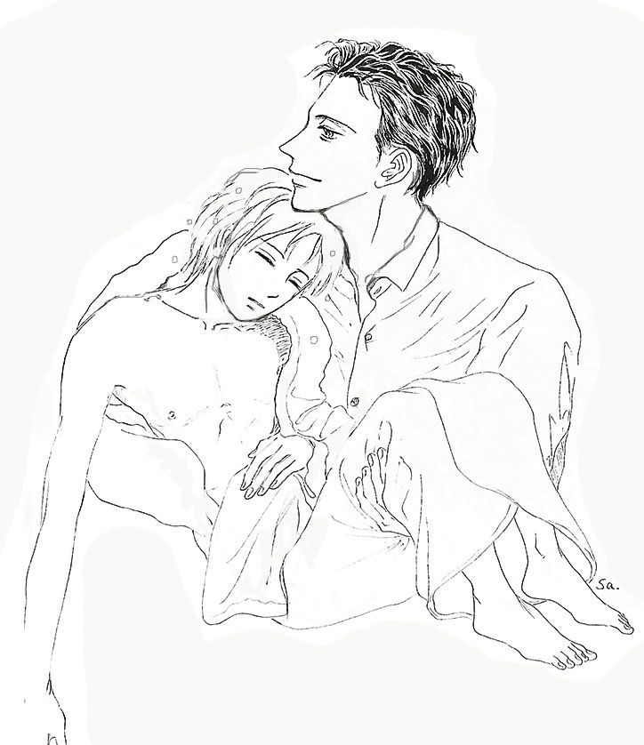

| Little boat goes to sunny完全版 １ | |
| 有間しのぶ | |
| leap fish books (2018) | |
※２０１８年１月までに１巻の初版（旧版）をお買い上げ下さった方へ
当時の配信元の手違いで、
挿絵が入っていなかった上に文章の行間の表示がおかしいままだったことが判明しました。
その配信元から引き上げ、修正をした完全版がこちらになります。
Kindleの読み放題にしてありますので、よろしければご一覧下さい。
お買い上げ下さっていた方にはご迷惑おかけして申し訳ありません。
２巻以降のシリーズもこちらと同じ仕様になります。
目次
ホテル
高校生活
組長に会う
夜を行く
月
浴室
寝室
朝
奥付
ホテル
「まだ見てるのか、そんなに雪が好きか」
男が後ろから声をかけてきた。ガラス窓の前から、嚮（きょう）は振り返らなかった。返事もしないですまされる相手ではないことくらいわかっている。
蹴り倒されるかもしれない、髪をつかんで引きずり回されるかもしれない、この男よりもっと格下の連中に、これまでそうされてきたように。それでもただ、黙って突っ立ったまま、高い天井から嚮のへその位置まである大きなガラス窓の外に顔を向けていた。
副都心にほど近い、高層ホテルの最上階スゥィート。
「甘いほうの sweet でなく suite room 、つづき部屋が二つ以上ある間取りのことだ」
と、さっきエレベーターでこの 53 階にくる間に、男が言っていた。確かに、エントランスの 2 重になったドアを入ると、部屋の重厚さに比べこじんまりしたシングルベッドが二つならんだ寝室があり、通り抜けのキッチンと居住にも充分対応しそうなダイニングルームがあり、そのほかにドアの閉まった部屋が二つあった。一つはバスルームとサニタリーへ続くドアだろう。
そして今、嚮をつれて男が腰をおちつけたのは応接間の役割とおもわれる、重厚な大理石のテーブルと黒革のソファセットのある一隅だ。 寝室を素通りしたときは少し意外だったが、安心はしていない。酒でも呑んでからにするのだろうと思った。どんな間取りだろうとここはホテルなのだ。
この男もやはり、自分をこういうところへ連れてきた。そのことになによりも落胆し、打ちひしがれていた。
（おんなじだ、やくざなんて誰も彼も）
まだあまり話をしたことはなかったが、この人はほかの組員とは違うという気が、勝手にしていた。今となってはおめでたい。
下界は灰色の曇天に包まれ、重なりあう程林立したビルの谷間にひたすら雪が降りしきっている。フィルムを回し続けているかのように、延々と。
眺め続けていると気が遠くなりそうだ。ガラスがなければ自分も吸い込まれてしまうだろう。
嚮は、鉄色に塗られた窓枠に片手を乗せてその下界を眺め続けている。冷気がてのひらから心臓へ突き抜けるようだが、身じろぎもしなかった。
「よく飽きないな、高い所が珍しい年齢でもないだろう。中学生じゃなかったよな」
男が後ろから、苛立っている風でもなく淡々と言う。
「高校です ... 」
とっくに行っていない。そんな生活はとっくにない。
「じゃあもう早すぎないな」
ぎし、っと革張りのソファが軋んだ。
「こっちに来い」
嚮は悲愴な面もちで、ようやく男の方をみた。追いつめられて、いま自分を食おうとする虎に最期の哀願をする、
あるいは決死の反撃を試みる野兎のように。しかし男は嚮を見ず、
「背中のバッグ置いて、いいかげん上着も脱げよ。落ち着かない」
と言うと、ソファの背もたれに深々と身を沈めた。異例の速さで組幹部に名を連ねた人物。歳は三十代前半と言うことだが、言動にとらえどころがないせいか年齢不詳に見える。身なりにも身のこなしにも隙がなく、洒脱だった。緩く掻きあげた艶のある黒髪が、額に柔らかく陰影を作っている。
「 ――― はい」
この部屋はエアコンが利いて暖かいのに、嚮はかじかむように体中こわばっている。うつむいてのろのろと擦り切れたバックパックを滑り落とした。そして冬はこれ一着しか持っていない、薄汚れたダウンジャケットを脱いで、ぱさりとその上に置いた。安売りのセーターと膝の抜けたジーンズの、痩せこけた姿がむき出しになった。
「ここへ座れ」
男が手招いたのは自分の隣ではなく、はすに向かい合った一人掛けのカウチだ。嚮はおとなしく腰かけた。
「顔色悪いぞ、寒いか？」
「いえ」
「元の ×× 組ではなにをやってた？」
「つかいっぱしりです。兄貴たちの車の洗車とか、地回りのお供とか ... 」
「まあ、そんなところだろうな。うちの組に来て半年たらずか、しばらく見ていたが、まだ誰の盃ももらってないのと、お前がモノになりそうなのはわかった。」
「 ...... 」
男は傍らの、ビジネスマンが持ちそうなアタッシュケースを引き寄せると書類の束をいくつもひっぱりだし、大理石のテーブルの上を嚮の前に滑らせた。
「まず、これが今のおまえの借金の状況」
嚮の借金ではない、事業に失敗した両親の負債だ。銀行と癒着していたとある組織にだまされ、負債を何十倍に増やされて家も土地も先祖代々の財産も奪われた。あげく親戚にも見捨てられて心中した、嚮の両親の負債のことだ。
「払いきれない残額のためにおまえは ×× 組の預かりになった」
「そうです」
実質チンピラですらない奴隷だ。
「しかし ×× は抗争の結果、もう存在しない。組幹部はわかっているだけでもほとんど死亡、まあ、雑魚のほかは生きてはいないだろう、あの組織を仇とみていたとこは多かった。うちが、八景組が、叩くだけ叩いて引き上げた後、前から軋轢のあった関西系と関東系の組織に文字通り八つ裂きにされていたよ、幹部連中の家財私財までな。」
切れ者の幹部は長い指で書類を数ページめくった。
「資産はおれがだいたい目星をつけて、うちの八景組が解体して吸収、そっくりひきついだ。 ×× が管理していた地所家屋、事業すべて。さらに組幹部でいわゆる山分けをした。俺もそのひとりだ。飲食店舗ビルまるごともってった者もいるし風俗営業権利と従業員を根こそぎもらったものもいる。
― おれの取り分は、ささやかな不動産と、おまえだ。」
ここへ連れてこられた時点で予想はしていたから、とくに驚きはない。黙ったままの嚮に噛み含めるように
「おまえの身柄は今俺の手元だ。両親の借金ののこり 3 千万円余もふくめて。この書類は、これまでの経緯と現状が明記してある。弁護士に作らせたから法的にも効力がある。目を通して確認しておけ」
うつむいている嚮に、いいか、と糺す。嚮は寒々としながら黙ってうなづいた。
（なんで今さらそんな事。おれの飼い主が変わったってだけだろ ... ）
「それからこっちの書類は、俺が手がけてる地所のテナント企画。これはまだまだ先でいいけど、だんだんこういう物の見方を覚えて、将来は自分なりの意見をきかせてくれるといいな」
こんどこそ意味がわからない。
「 ...... はい ... ？」
顔を上げたとき、男は新しく煙草をくわえ、今まさに自分の銀色のライターで点火するところだった。
「あっ、鷹森さん、おれが！」
慌てて備え付けの豪華なライターに飛びつき、左手でスライディングのように火を差し出す。これまでなら、ぼけっとしやがって何様だと恫喝されてはり倒されるレベルの失態だ。しかし鷹森と呼ばれた男は悠々と自分で火をつけ、うまそうに眼を細めて吸い込んだ。そしてライターを持ったまま中腰の嚮にかからないよう、顔を横へ向けて煙を吐く。やくざの仕草ではなかった。
「未成年のうちはそんなことはしなくていい」
と言うせりふも。
「でも、鷹森相談役 ... 」
「おまえをな、数ヶ月見ていたが事業面で仕込んだらいけそうな気がするんだ。」
「 ... は ... ？」
「頭の回転が早いのと、媚びがないのが気に入った。通っていた学校も調べたが優秀なんだな。」
「え ... あの ... 」
「一応はおれの子分、いや弟分という形だが、ゆくゆくはうちの会社でビジネス上の戦力になってくれればと思ってる。」
「ええええ！？」
「もっとも他になりたい職業があれば要相談だ。就職するまでのアルバイトと思っていい、ただし真剣な職場だぞ」
「あの ... 」
「おれの肩書きは企業の経理顧問だ。ちいさい会社を経営してるが、実務は八景組専属の相談役だ。これは知ってるな。どっちにしてもおれは事業拡張と、手の切れそうな新札の束を机に立てて積むことにしか興味がないんだ。任侠映画みたいな形式なんてじゃまくさい。煙草の火もつけなくていいし酌もするなよ、おれは手酌党だからな。
で、どうだ、将来おれの補佐として働くか。」
「でも、だって、あの ... ！！でも、おれなんの資格もないし、がっこも行ってないし、ありがたいんですけどお役にたてません」
「それはこれからだよ、手続きしてやるから、学校も行き直せ。」
頭がぼうっとする。信じていいのか。
（とても信じられない）
「学費、生活費、おれが面倒をみる。」
嚮は乾いた声だけで笑いそうになる。あらたな借金地獄か、ごめんこうむる。
「先に渡した書類に正式に記述してあるが、おまえの借金はうちでチャラにしてある。どこにも 1 円の借り貸しもない状態、白紙だ。利息で何十倍にもなってたが、関係ない。うちの金じゃないからな」
限界だった。
嚮は怯えきっていた。
半べそをかいて鷹森を見つめた、いや睨んだ。
「ん？なんだ？」
文字通り壊れるまで体を使われて、ぼろ切れのように消えていった男や女を、前にいた ×× 組ではさんざん見聞きしてきた。人間でなくただの肉体としてたらい回しに貪られ、撮され、売りに出され、最期は本当に肉と臓器になる。昨日まで居た人間が、人間でなくなり今日は消えている。
（誰も、ほんとに誰一人、助けてなんかくれない）
記憶からどんなに消そうとしても、消えない刻印がある。
（おれを味見したって言いやがった）
そう言った連中は、嗤っていた。踏みにじって痛めつけて、嗤っていた。唯一の救いはその痛苦と恥辱よりも、ショックと、自分が片鱗となってこの世から消えるのもそう遠くないという怯えのほうが強かった事だ。
「代わりにおれ、何をすればいいんですか？」
鷹森はまじまじと、唇をふるわせる嚮の顔を見つめ返した。真顔でいながら、どこかおもしろそうに笑みを含んだ眼差しは、こちらの惑乱が静まっていくような、不思議な落ち着きをたたえていた。
（ ... この人は本当に極道なのか？）
「あのな ... 、心配しなくても、おまえみたいな小僧っ子をどうにかしようとは思っていない。なんの心配をしてるかは知らんけど」
「！」
恥ずかしかった。あやまるのもためらわれ、いたたまれずにただ頭を下げた。頭を下げた自分の様子を、鷹森が痛ましそうに、慈しみをこめて見たことには気づいていない。
「おれが世話をやくのは、おまえが小僧っ子だからだ。ただそれだけだよ。」
鷹森の声は静かで、深かった。その語調を自分でいなすように軽い口ぶりで、
「うちの八景組はどっちかってえとクリーンな方向で、世間様と折り合いつけていきたいんだ。未成年はなるべくきな臭いことに噛んでると思われたくないし、実際関わらせたくない。その意味じゃ古いが、これはよき伝統だろう」
「はい ... 」
「組長にはおまえの話も通して、許可を得てある。ガキをいじめてよろこぶお人じゃない。むしろツンデレによろこ ... あ、いや、今のは無し」
「はい」
違う意味で固まる。組長の顔はなんどか事務所の使い走りをして見知っていた。丸顔で好々爺、祭りの屋台を威勢よくしきってるのが似合いそうな、やくざと思わなければ親近感を覚えそうな人物だ。
「お前の名は小木嚮、だったな」
「はい」
「一つだけ、この借金操作の書類のために名前の表記をかえさせてもらった。読みはそのままで、漢字をこれにした。今後の人生はこの名前だ。」
あらためて書類をよくみると、自分の名が " 響き " という字の響（きょう）になっている。もういない両親が遺してくれた、もう唯一の形見と言っていい名前ではあった。しかし、
（しかたない。親にもらったものは形だけじゃない）
「わかりました」
「正式な署名以外なら今までの文字でもいいぞ。」
「ええ、でも自分でも早く慣れた方がいいし。これまでの文字は気に入ってますけど、まともに読まれたこと呼ばれたことないんです。」
鷹森は微笑んだ。
いつも含み笑いをしているような飄然とした男だったが、目もとを柔らかくして顔をほころばせた。
（この人、いい匂いがする。）
ふと、そんなことに気づく。
「よし。学校を卒業して社員になったら、給料もでるからな。無償で働けとは言わないから安心しろ」
鷹森は冗談めかしたが、
「それでもいいです ... 」
本心だった。
鷹森はあのもっとも嫌な、恐れている事はしないと言う。
信じてみようと思う。
それだけで、この先どんなことにも耐えられる。
嚮、いや響は、しみじみと長い吐息を一つついた。鷹森は続けて言った。
「今後お前に舐めた真似するやつは、俺に喧嘩を売るってことだ。
ふざけた手出しされそうになったら俺に言え。どんなバカにもわかるようにしてやる。」
「はい ...... 」
安堵とともにじわっときて、顔をそらす。鷹森はなにげなく付け加える。
「高層ホテルの窓は、開かないんだ」
ぎくり、として響は鷹森を見上げた。そのはずみで涙が一粒、頬を転がり落ちる。
「飛び降りられたらホテル側が困るだろう。まったく開かないか、せいぜい数センチか、そういう構造なんだ」
（雪景色をみてたんじゃないって、気づいていたんだ）
「おまえ手はどっち利きだ」
「右です、ほんとは」
「 ... ああ」
鷹森は自身で語ったように、響が組に来たときから観察してきた。前から助手が一人欲しいと思っていたが、十代の子供をその役に置く気はなかった。しかし、 ×× 組からどっと下っ端が流れ込んで来た中で、無愛想で動作も遅い少年が、話しかけると明晰な答えを返してくるのが意外だった。ふて腐れていつも殴られていたと聞いていたが、鷹森にはそうは見えない。何度か他愛無い会話をしかけた、すれてないのもわかった。しばらく見ていると無愛想で不器用なのは過労と、おそらく心痛と重圧で思うように体が動かないのだと気がついた。頭と体の連動がばらばらで、ぎこちなく左手ばかり使っていることにも。こいつは死に向かい始めていると悟り、予定より早いが力になろう、と決めた。鷹森に信を置いている組長に打診すると、身柄を任すと言ってもらえた。たとえ期待する程の能力がなくても使いパシリでもいい、見殺しにはできない。鷹森は決心した。
そんなことはおくびにも出さず、軽い調子で続ける。
「このホテルは支配人が昔なじみで、 52 階の中華もうまいからよく使うし、頻繁に泊まる。ほかにも商談は密室だし、出張すればおれと相部屋だ。いいか、大丈夫か？」
「鷹森相談役となら大丈夫です」
動く方の左手で涙を払うように拭い、響は初めてほほえんだ。
真っ白い歯が見えて、これまでの堅い仏頂面がくしゃくしゃっと人懐こくあどけなくなった。切れ長の眼が涙ぐんだせいできらきらしている。
「 ――― そうか。」
鷹森は短い返事をして、黙った。
陽光に巡り会った花が、身をほどいた瞬間だった。柄にもなく息を呑まなくてはならなかった。
（おれはこの先、この面影を胸の奥に抱き続けるだろう）
直感だ。刃で刻まれたように確かな予感だったが
（ ― まさか。どうしたってんだ）
振り払う。
（いつか手放すのに、今から情がわいてどうする）
巻き込まれてこの世界に来てしまった子供だ、一人前になって本人が希望したら手元で飼い殺しにせず、巣立ちをさせてやるつもりでいた。それは響がはじめてではない。鷹森の、極道が吸い上げた金を吸われたところへ還元するという " 道楽 " である。響は内心で動揺を抑えている鷹森を、不思議そうに小首を傾げて見ていた。今までと違い表情が澄んでいる。
（利発そうだな。もし順調に育ってくれたら、こいつをパートナーに稼業を回すのは楽しそうだ）
意識的に仕事へ気を逸らして、動悸をしずめる。
そう、組相談役幹部扱い鷹森柾也はどきどきしていたのである。
「 ― さ ... て、初仕事にその中華につきあえ。べらぼうにうまいんだが、いままで相席してくれる奴がいなくて寂しかったんだ。ひとり中華って、おまえ、切ないぞ？」
響はまた笑った。
「ふふふっ、そうですね」
屈託のない顔を向けられて、鷹森の胸に、ひたひたと暖かみがわいてくる。この稼業に入ってから忘れていた感覚だった。もっと笑わせたかった。
「はらは減ってるか？響？」
「減ってます！」
弾けるように返事をした。健やかな少年そのものに。
食事をしたら、まず着るものを買ってやらなくては、と鷹森は考える。
窓の下のビル街は、灯をまとって命を吹き返したように煌めきだしていた。その街の谷底にまで踊るように、雪は降り続いている。
後日。
クリーニング屋の若い店員は、カウンターに響が置いたスーツをそっと手に取った。上着の内胸に takamori の刺繍文字を認めると「少々おまちください」と奥へ入った。代わってすぐに初老の男がでてきた。小柄な銀髪で折り目正しく、彼が着ているとクリーニング屋の制服姿が近衛兵のように見える。深みのあるモスグリーンのスーツや灰白色のシャツを一通り見て
「鷹森さまのお洋服ですね」
と確認する。
「はい、そうです。」
と答えると、老人はふと顔をあげ、初めて響の顔を見てほんの一瞬微笑した。
「いつもと同じお仕上げでよろしいですか？リネンウォーターも？」
「ええ、香りも同じでお願いします。」
老人は再び微笑し「かしこまりました」とタグをつけた。鷹森に対しての好意的なほほえみだと響は解釈し、怪訝にも思わずに代金を払った。控えの紙片を受け取って店をでた。カウンターの老人は預かった衣類を片腕に掛けながら、鷹森が身につけるものを任すくらいあの少年を気に入った理由もわかると思い、鷹森の身の回りの世話を言いつかったたなら、あの子の将来はきっと安心だろうと考えていた。
高校生活
今日一日の授業が終わった。
内容のない HR は雑談で終わり、生徒たちはてんでに、あるものは部活へ飛び出していき、あるものは徒党を組んでたらたらと教室を後にする。
響は携帯を開いた。クラスや、学校の課内のクラブの友人から遊びや連絡のメールが数件。でも響は
（ ... ない ... ）
と胸の内でつぶやき、しかたなくこちらから鷹森のアドレスに
『学校終わりました。今日お手伝いすることありますか？』
と送信する。そのまま自分の席にぼんやり座っていると、ややあって
『ある。学校はどうだった』
と返信が来た。
『ふつうです』
『了解』
それで終わりだ。
物静かに帰り支度をして、何人かに「小木ィ、帰んのー」「マック行かね？」と声をかけられ、「おれバイトだから」と柔和な笑みで手を振る。
「なんのバイトだっけ」
「叔父さんの手伝い。世話になってから」
「そっか、じゃまたな」
これで難なく教室を出る。クラスメイトたちは屈託ない子が多く、嫌いではない。
（でもどうしても、仲良くなるにつれていろんな話しなきゃいけなくなる。そうなってから一線を引くより最初から距離を置いてるほうがいいや ... ）
一抹のさびしさもなくはないが、高校を卒業した後の自分の身の振り方を考えると、彼らとの縁が続くはずもない。
一年だぶりはしたものの編入試験と以前の成績とでめでたく、前とレベルに差がない高校の２年生に無事編入することができた。この進学校で部活も役員も塾もないのは響くらいのものだ。極道の保護者がいて、ふだんはその事務所で経理を教わりながら手伝いをしているのも。もっとも学校側には、鷹森は遠縁の叔父ということで通しており、職業も表向きの職種にしてあるのだが。
（でも、これだってふつうの暮らしだ。充分だ。柾也さんにそう返信するとき、いつもむっちゃ嬉しくなるもんな。うまく言えないけど）
頬を少し染めて、一人笑いしないように唇を噛んでそう思う。自分がひどく口数少なくなった事には気づいている。気持ちをうまく話そうと思う程、胸につかえるようになり、結局口をつぐんでしまう。
（こういうの良くないかもしれない。でも）
響は廊下に出てからもう一度教室内を振り返った。残って談笑している数人に日が差す。ピンと糊の利いた制服の白いシャツ、同い年の級友との案外深いやりとり、くだらないやりとり。体育の後の眠い古文、偉人の似顔絵でマンガを描いて回覧する世界史。嫌いな教師うまがあう教師。ふつうだから良い。充分だ。もう戻れないと思っていた世界は、日差しに無数の埃が舞い上がってきらきらしている。
鷹森は相変わらずの『ふつうです』の素っ気ない文面に、今日はなんと返すべきか一瞬悩んだ。
大きな天窓から降り注ぐ日差しを、麻のシェードでさえぎった個室は、静かなピアノ曲と甘いオイルの香りにあふれている。美しいが力強い女の指が、ゆっくりと鷹森の裸の背中からを揉み解している。入れ墨も刺青もない、滑らかな背中だった。
会員制のスポーツジムの中にあるマッサージルームである。マシンジムや室内ジャグジーの他に、自然の陽光の下で水泳やスカッシュやテニス、本物の緑道でランニングや乗馬ができる。どんな大物だろうと、極道連中はまず来ない。必要充分に贅沢だが派手さは無い健全なクラブで、個室なら喫煙可だがバーもない。ただくつろいで体を動かし、筋骨を保ちたい人だけが、一人か二人でそっとやってくる隠れ家だ。
マッサージしてくれるのはいつも指名している顔馴染みの女だが、うつぶせて携帯をにらんでいる鷹森に優しい微笑をおくるだけで、うるさく口を挟んではこなかった。
（つまり今日も問題はないんだろう）
と解釈し、了解、とこれまた素っ気なく返信したが、ほかに言いようもない。聞かれたことにはちょっと考えてからまじめに答える、響の声が聞こえるようだ。
（態度が硬いんだよなあ、遠慮してるというか緊張してるというか）
半年前に響を引き取った。
とはいえ、親になったことのない鷹森は、今更子育てよろしく同居のつもりはなかった。鷹森個人の会社オフィス近くに手頃なコーポを確保し、そこに独りで住まわせている。一般の家政婦派出サービスの会社と契約して、週に何回か家事や身の回りの世話を頼んでいるが、基本的に今から炊事も掃除洗濯も、なるべく自分でやらせることにしていた。家賃と学校への必要な引き落としや振り込みは鷹森が行い、響の生活費は本人の口座に振り込んでいる。しかしシステム的に放置しているのではなく、仕事を手伝わせて覚えさせながら、週に何度かはかならず一緒に食事をとり会話するようにしている。必要なもの ― 教材や衣類のほかに、この年頃の男の子がみんなもっているような本やゲーム等で、贅沢はさせないが惨めな思いもさせたくない。世間一般の高校生に相応の小遣いのほかに、手伝いをした日はバイト代も手渡している。引き取ったのが冬だったのでクリスマスとお年玉を兼ねて自転車を買ってやったら、大喜びで乗り回している。
（しかし、これだけでいいのかな、金と生活の面倒だけで）
鷹森は最近よくこう考える。
（父親代わりのつもりはないし、おれはあいつの身内じゃないけど、もっと親身になってやらないといけないんじゃないかな、まだ十代なんだから。）
そうは思うが、具体的にどうしていいかわからないのだ。
（響もまだいろいろな傷が癒えきっていないだろうし、時間がかかるかもな。まあ、かといって今なにか問題がおきているわけじゃないけど ... 。）
鷹森自身は、どこにでもある中流家庭の長男として、まあまあ家族仲もよく、４つ下の弟とも結構気が合う仲で、順風万帆に育ったと思っている。もちろん進学とそれ以降の勉強はがむしゃらにやったが、遊び盛りの頃は母親に甘え、父親に頼りながら外で友達と思い切り暴れまわり、のびのびと過ごした実感があった。
（あいつにもそういう時代が、もっと長く続くべきだったんだ ... 。）
携帯を閉じ、
「だいぶほぐれたよ、少し昼寝していいか」
と女を見上げた。眼に心地よいウエストの曲線を、品のいいワンピースで包んだ女はにっこりして、
「ごゆっくりどうぞ。御用がありましたらベルでお呼びください」
「ありがとう」
仰向けになって眼を閉じた。退室ぎわに女がちらりと振り向いて、愛おしそうな視線を投げかけたことには気づいていない。日々の激務の疲労がやわらかくほどけて、うとうとしかけたところへ、いまたたんだ携帯電話が鳴った。
区役所が鳴らす 5 時のメロディが流れる街に、響は電車から降り立った。雑踏が始まりかけた流れから逸れ、閑静な一角のマンションへ向かう。
鷹森が個人で構えている金融マネージメント＆コンシェルジュのオフィスがある。企業に経営のアドバイスをし、株取引や不動産売買にも仲介して資産運用を手助けするのがおもな業務だが、先に述べたように実質は八景組の経理顧問専業。フロント（先兵）企業だ。
フロント企業とは、暴力団ややくざの組が直接経営したり、また親交のあるものが経営して資金源となる企業のことで、企業舎弟とも言われる。
舎弟と言われるだけに鷹森の立場は本来おとなしいはずだが、彼は八景組の運営する金融業、人材派遣、土木建築、廃棄業務、はてはパイプのある議員の秘密資産の運用にまで介助しており、合理的能率的、かつ合法的（時によるが）に資金拡大の成績をあげていた。そのために、中途から極道入りした外様で組員をもたない身でありながら、看板上も事実上も、幹部、重鎮の扱いを受けているのである。
響の住む部屋はそのオフィスから徒歩７～ 8 分で、いったん帰ってから出直すこともあるが今日は直行することにした。
チャイムを鳴らすと、鷹森がドアスコープのマイク越しに
「おう、入ってくれ」
合鍵でドアを開ける。このオフィスには鷹森と響のほかに従業員はいない。もともと居住用の３ LDK 、一番広い部屋を業務用オフィスとして使っており、響自身のパソコンや私物、仕事が押して寝泊りする時の着替えも置いてある。オフィスだが室内のメインは鷹取の趣味の蔵書であふれかえっている書架で、響は時々時間も忘れて古い小説を読みふけっている。
いま、その書架の隣の、古ぼけた大きなソファに半身を埋めて、鷹森は膝の上のノートパソコンを見つめていた。
（組で厄介ごとでもあったのかな）
定位置の、自分用のデスクの足元にそっとかばんを置く。鷹森が画面から眼をあげ、いつもと変わらない声と表情で
「おかえり」と言う。しかし響は、鷹森が苦々しい気分でいることを察知した。
「ただいま帰りました。なにかあったんですか」
「うん、たいしたことじゃないが時間を食いそうだな。おまえ今夜は大丈夫か、宿題とか予習とか」
「特にありません。」
実際明日の朝、小一時間早く起きれば済ませられる。
「おやつは冷蔵庫な、手を洗えよ」
「はい、でもまだ腹は大丈夫です」
「じゃ早速手分けしてやるか ... 」
鷹森の午睡を破って連絡してきたのは、若頭の経堂だった。若頭とは組長のすぐ下、 № ２で、次の組長候補にあたる。会社なら副社長の位置だ。携帯電話で話す内容ではないとあって、鷹森はすぐ身支度をととのえてジムを出て、経堂宅へと自ら車を走らせた。
若い新婚夫婦が好みそうな洒落た街の分譲マンションで、家人は買い物に行かせたと、経堂自らがドアをあける。途中買い求めた上生菓子を差し出すと、眼を細め
「酒なんかよりありがたいぜ」
4 ４、５歳の経堂は極道に似合わず繊細な男で、そのせいか体調の優れないことも多く、金銭面ほか精神的な支えとしても、年下の鷹森を頼り慕っているのである。
「ちっと内輪の話だ、鷹森相談役。 M 市の賭場のあがりについてなんだがよ」
「この間おおきな手打ち博打があったとこですか」
小さなしょばを争って隣接する組といざこざがあり、その手打ちのために賭場を開いたのだ。勝ち負けは双方の組員個人によるが、あの賭場の独り勝ちは若頭がじきじきに盃をかわして面倒をみている子分のひとりだったはずだ。
「組長代行が、あの上がりをそっくり、上納金にするといって巻き上げたらしんだ」
無礼講で千万単位の金だったはずだ。
「若頭に断りなく、ですか」
「断ってくれりゃ俺の腹もたたねえ、巻き上げられた本人も涙を飲んで、まあ納得させられっさ、組長の懐に入るんならな。」
「それが上納金ですからね。 ... てことは」
組は弱肉強食、配下のもうけは上層部が独占しても通常は文句は出ない。なので今、温厚な若頭が静かに立腹している理由はひとつ。
「代行の独自ルートに回したんですね。組長には利殖して倍に増やしてから献上するとでもおっしゃって」
「そのとおり。」
代行はこの 2 ， 3 年独自ルートを開拓してるのはいいが、報告をはしょって独走気味である。
「おれは二重に赤っ恥かかされたよ。日頃から組内の若えのには、博打の一人勝ちは必ず場の皆さんにもお振る舞い分けしてこそ漢だ、としつけてるんだ。それを搔っ攫う真似しやがって ...... つらを土足で踏まれた気分だぜ。」
「若頭のお気持ちは、みんなわかって堪えているのでしょう。しかし代行がからんでるなら、金の投入先は国外ですね」
「ご明察だよ。南米に流しやがった。」
「やらかしてくださいましたね ... ペルー、グァテマラ、あとはメキシコか」
「だろう。南米に今誰が行ってる、代行の犬のあいつだ。白い粉まみれのな。ご存知だろうが相談役、組長も俺も、薬は大嫌いだよ。あんたもそうだったな」
「はい」
「うちは元々は祭りの好きなテキヤの集まりだ。血で血を洗う業界の中で、のほほんとやってきたんだ。たいした敵も作らず、小競り合いがあっても手打ちや話し合いで温和にカタをつけてよ。組長がいらねえ揉め事がお嫌いだからな、薬の次に。」
「おっしゃることはわかりました。代行が本気でコカやシャブに乗り出すなら、見逃しておけません、警察に介入される材料にもなっちまう。すぐにどうこうはできませんが、とりあえず至急、代行の資金の流れを押さえます。南米のあいつの動きも捉えておかないと」
「あの舎弟あがりが ... 」
若頭はつい本音で歯軋りとともに罵倒をもらし、われに返ったらしく気まずそうに笑った。
「おっと、きかなかったことにしてくれ。あんただからつい」
「心得ております。」
「 ... ついでに、ここだけの話で聞かせて欲しい。戦争になるとおもうか？」
若頭一派と代行一派の不仲が殺し合いに発展するとおもうか、という質問だ。鷹森は即答した。
「それだけは絶対に回避しましょう。組長は揉め事が、とくに組内の争いは何よりもお嫌いですから」
「そうだな ... 」
若頭はほっとしたように、そしてどこか寂しそうにつぶやき、
「じゃ、頼むわ色々と」
と軽く頭を下げた。
穏健な若頭はこれまで大きな抗争の体験がなく、武力の用意も乏しい。一方組長代行は、現在の組長が若い頃からともに修羅場をくぐってきて、いまだに血の滾る武闘派である。そればかりでなく奸智に長けた腹心を南米に置いているのは、薬のルートの他に、銃器の調達のために違いなかった。抗争になったらどちらが追われるかは、用意に想像がつく。若頭がなにより怯えているのはそこだった。
（しかし怖気づくのが悪いだけでもない。あの若頭だから、組員たちもこれまで無茶に駆り出されず命も落とさずに細々やってこれたんだ。）
温和で人のいい組長と若頭が収める現状なら、鷹森は極道社会とそこにいる自分をなんとか許せる。
経堂のマンションから暇乞いして出ると、車庫とエントランスに経堂の直属の配下が数人見守っているのが見える。互いに深く頭を下げ、無言でねぎらい合う。なぜかふと、鷹森の眼裏に一つの面影がうかんだ。涙のたまった眼をきらきらさせて、にっこり笑ったあの顔。あの時、胸に銃弾のように打ち込まれた予感。
（早く仕込んで、力をつけてやらなくちゃな。独り立ちできるように）
帳簿の見方から支出と税金の割り出し、株市場の見方、実地でどんどん教え込んで、響が承諾するならいずれは、自分の補佐としてそばに置くつもりだった。しかし。
（正直、いつまで戦争を回避できるかはわからない状況になってきたな。）
最終的に目的はなんだと尋ねられたら、鷹森は即答する。あの子を助けたい。
（せめて大学に入れてそのまま手放すのが本人のためだろう。それまで持ちこたえなくては ... ）
シートベルトを締めながら、鷹森は思案する。
その響本人はいま、鷹森に説明を受けながら 5 年ほど前からのデータ、特にここ 3 年間の組長代行の運営するフロント企業各種の年間支出、月別の支出、寄付、事業売り上げ、補助・助成金、などのデータから、使途不明金や架空名義に当たりをつけて、ひとつづつ洗い出す方法をきいていた。。
やくざの資金源といえば、風俗や飲食店、バーやスナック、パチンコのあがりや麻雀、野球賭博、また飲み屋のみかじめ料といって、貸しお絞りや内装代、用心棒代などが主である。それらは今も健在だが、現代では債権取立て代行、金融、不動産、株式売買のトラブルへの介入、民事介入暴力などがのしている。むろん密輸や麻薬、銃砲や人身売買も暗躍する。そうした裏の金は、表の収入源には顔を出さない。表と裏と両方を洗うのである。
「ものすごい量の数字だろ、慌てなくていいからな」
「数字は好きですから。 ... でも、ちょっと怖いですね」
「なんだ」
「どこと取引をしていくら儲けがあって、その配分がどこと誰にいって ... 金の流れを追ってくと、人の流れがみえてくる。」
鷹森はクレジットカード会社さながらに、可能な限り個人的な出費にいたるまでデータに入れている。彼本人は、どこがどのくらい儲けようが誰が得をしようが、興味はさらさらなかった。顧客になればベストをつくすだけ、その見返りはもらう。報酬金と、情報だ。商社時代に高級クラブで現組長と知り合った。人柄をみこまれ、退社したあと声をかけられて盃をもらった。ポッと出の素人あがりが親分じきじきに子分盃を受けたとあって、いきりたち警戒した極道たちは多かったが、彼らなりに、鷹森の無欲というより投げやりで退廃的な人生観を嗅ぎ取ったのである。
数字を淡々と増やすことだけで、この世界とつながっている男。
客の儲け分は絶対に確保し増大し、無造作に分け前をごっそり取っていく。
てらいもせず隠しもせずむしろ小気味よい。
そのやり口は、やくざたちの美学に合った。妬みいぶかしみつつも、彼らは鷹森を受け入れた。そして今やひっきりなしに、さまざまの相談をしてくるようになった。自分たちの個人情報を手土産にぶらさげて。むろんお買い物メモお付き合いメモなどどこにも存在しない。すべては数字となって留まるだけだ。
「すごいな ... 鷹森さんが集めたお金の流れだけで、人間ひとりひとりが見えてくる、情報という形にされてしまったら逃げられないですね。」
鷹森はみぞおちのあたりが心地よく疼くのを感じた。
「たとえばな、生き物を生きたまま素粒子まで分解できる装置にいれ分解してから復元したとする。それはもとの生き物かもしれないが、同時にデータだろう」
響はにこりと笑った。
「これが本当の目的なんですね。武器なんだ」
（１５、６の小僧のくせに見抜いたか）
快感だった。含み笑いをかみ殺しながら響の顔を見ると、再び響はこまかい数字のびっしりならんだ画面に見入りながらつぶやいた。
「でも、だからおれを助けてくれるなんてことができたんですね ... 。おれの情報も細かく細かくされて、この中に紛れ込ませてから別の形で出してもらった。 ... きっとおれが初めてじゃないんだ」
鷹森は響の肩を軽くぽんと叩き、
「晩飯ははずむぞ」
と自分のデスクの前にもどる。
響がいればおれは孤独ではない、と思う。
遅い夕食を近くのイタリアンレストランから取った後、ずっと根をつめていた響の顔に疲れが出ているのを見て取って、鷹森は今夜このままオフィスに泊めることにした。先にシャワーを浴びさせ、鷹森はしばらく組の業務をしてからビールを一本のみ、自分も浴室を使った。
寝室に入ると、ふたつ並んだベッドのひとつで、響はすでにぐっすりと眠っていた。起こさないようにそっと明かりを消し、タバコ臭い自分の布団に入る。
深夜。響はふと眼を覚ました。
頭が緊張したままなのか、眠りに戻れなくなってしまった。もともとずっと眠りは浅い。住宅街独特の、じーーーっと底鳴りするような静寂にかえって寝付けなくなり、真っ暗闇の中しばらく布団に仰向けになっていた。闇に少し眼が慣れ、傍らのベッドの上に横たわる鷹森らしい人影がそれとなくわかる。だが呼吸で上下しているはずの胸も腹も暗さに判別できず、寝息ひとつきこえない。布団の衣擦れの音すらしないままだ。あまりに鷹森の寝姿が静かなので、響はふと心配で起き上がり、そばへ寄ってみた。
そっと顔の近くに手をかざすと、ゆっくりと深い吐息が触れる。耳を傾けてもほとんどきこえないが、呼吸はしているのだ。なんだいらない心配しちゃったと、声に出さず一人笑いして自分のベッドへ戻りかけたら、
「どうした ... 」
と暗さで顔の見えない鷹森が尋ねた。
（しまった、起こしちゃった）
身が縮む思いで
「すみません ... つい」
「おしっこ付き合って欲しいのか」
（ ... おれ高校生です ... ）
「あんまり静かなので、息しておられるか確かめに ... ごめんなさい」
鷹森はひと呼吸置いて、闇の中で静かに笑った。
「よく言われたよ、女房に」
妻の存在を初めて聞く。いままで家族や肉親について鷹森が語るのをきいたことがない。隠しているのか、響が遠慮して何もきかなかったからなのかはわからない。
（奥さんいるんだ ... 、普通に話してくれた、家族のこと）
「おれの寝息を夜中確かめたと、よく朝になって笑ってた。
そんなに死んだように寝てるのか、自分ではわからないからな」
声音がほのぼのしている。その声が懐かしむ光の風景が響にも見える気がしたが、その続きを鷹森は語らなかった。「妻」が今はどこでどうしているのか、尋ねていいものかわからない。過去形である事と鷹森の声の深い静かさに、自分の胸の奥もしんとした。
しばし沈黙があった後、
「 ...... もう寝ろよ」
「はい」
響が自分のベッドにもぐりこむと
「おやすみ」
和やかな声が暗がりから聞こえた。
「おやすみなさい」
響も応えて毛布をかぶる。
おかえり、とか、おやすみ、とか。
自然に交わされる日常のおだやかな挨拶は、響の心にあたたかく滴り続けていく。
組長に会う
「おまえ、きちんとした服を持っていたっけ？」
木曜の夕方、オフィスで鷹森に訊かれた。
「きちんとって、正装ですか？制服だけです」
「制服はまずいな。よし、この際一揃え誂えよう。まだ背も伸びるだろうし、
フルオーダーメイドにする程凝らなくていいだろう。」
2 日前に赤坂のお忍びクラブで接待のパーティがあり、鷹森は側近役がてら組長に招かれて同行した。内輪の雑談の流れで「引き取って面倒みてる子はどうした」となり、「一度ご挨拶に連れて伺います」「早い方がいい、週末に事務所に連れて来な」となったのだ。高校の制服で顔を出させられる場所ではない。
響はパシリ時代に八景組組長の顔を姿形を見かけた事はあるが、むこうはよその組から砂利のように流れてきた、有象無象のチンピラやパシリなどいちいち覚えてはいまい。実際、鷹森が響の話をして面倒をみたいと持ちかけた時も組長は、
「そんな利口そうなのがいたか？鷹森が眼をかけるようなのがいたとは珍しいな。連れてってやんな。おれはかまわねえぜ」
と事も無げに言ったという。
「お姿知ってるなら、怖くなかったろ？」
「はい、全然極道に見えませんでした ... こんな事言っていいのかな。」
「ここではいいさ」
赤ら顔でぽこんとお腹がでた背の低いおじさんで、七福神の布袋さんに似ていた。絶えず笑い声をあげていて今思えば陽気な人物なのか。
（でもあの当時はなにも感じも考えもできなかった。）
神経が半分死んでいた気がする。
「おれたち雑魚は」
あえて快活に、響は笑いながら言う。
「最初、事務所の玄関口に集められて、兄貴の誰かが、かったるそうに説明したんです。」
――― 「いいか、てめえらのいた組はもうねえ。今からうちで働けや。嫌なら死ね。」
幹部ですら無い２０代後半のヤクザは、それだけ言うと大きなあくびをして、手近な２、３人の頭を軽く張り飛ばし
「ぼさっとしてんじゃねえ、パチ屋いくぞ、回収に」
と引き連れて出て行った。つられるように他の連中もざわざわと、地回りに連れ出されたり洗車や買い物の用事を言いつかって散りはじめる。それだけだった。元々チンピラそれ以下には、組への忠義も覚悟も責任もない。えさを貰いにくる野良猫のようだが、引き取ってもらった組の労働力になるのが食い扶持を確保できることだから、猫よりは気苦労が多い。あとは徒党を組んで飲食店を見張ったり脅したりする地回りだの、貸しおしぼりやおつまみの売り上げ、博打のあがりの回収だのをせっせとこなすだけである。むろん、いくらでも取り替えのきく労働力として、時には生命ごと捨てさせられる事もあるのだが。
「おれと一緒に２、３人いた ×× 組の下っ端は、まだいるんですか？」
顔を合わせたくないのが本音だ。自分だけいい服を着てきちんとした生活を見せつけるのも、思い出したくない事を嫌でも思い出させられるのも。
「おれはそっちは把握してないけど、代行が取引の手伝いに結構な大人数を海外に連れて行ったからな。数でにらみをきかせるのに。あれに付いて行ったんじゃないかな」
だったらいい。少しほっとする。鷹森は、そうして出向いた暑い異国では、死んだまま行方知れずになる者達も多いことまでは言わずにおいた。
そんないきさつで、この日は仕事を早めに切り上げ、鷹森は響を助手席に乗せて車に乗り込んだ。
「丸の内のおれが時々買う店でいいか」
「はい、おれはわかんないからお任せします。服は嬉しいけど、それ着て行く先を考えると緊張するな ... 。何を話せばいいんでしょうか」
「組長が話し好きでどんどん喋るから大丈夫。気さくな方だ。服も何を着てようが気にされないけど、こっちは礼儀としてなそれなりに身繕いしないとな。」
「はい」
シートベルトをしながら、鷹森は素直に返事をする響の顔をふっと見つめた。
「会って挨拶するだけだ、面接のようなものじゃないからな。今回以降もたびたびお目にかかる機会はあるだろうけど、極道にさせられるわけじゃないから」
響は意外だった。将来鷹森の部下となるために自分は引き取られたので、鷹森と響の双方が、了解しているはずだ。それに鷹森の部下なら名目は会社社員である。怖がっていると思われたのだろうか。鷹森の方も、自分で自分の言葉を訝しんでいた。なぜこんな事を口にしたのだろう。
「はい ... 、おれなら大丈夫ですよ。どっちみちおれは柾也さんのとこで働きたいだけで、それが極道でも会社員でも、どういう肩書きで呼ばれようがなんだっていいんです。」
それから一人ごちるように続ける。
「おれラッキーでしたもん、引き取っていただいた場所が、自分の居たい場所で。」
その作為のない言葉は、鷹森の気持ちのどこかに触れた。鷹森は珍しく自分が何を言いたいのかわからなくなって、言葉を呑んだ。車を発信させ、話題は他愛無い事に移った。
土曜日はよく晴れていた。太陽はさんさんと照っているが風が爽やかだ。
響には八景組本部事務所は久しぶりだった。自分でも不思議なくらい、ここに居た事を遠く感じる。よほど感覚が麻痺していたのだろう。鷹森と響が車で現れると、いち早くガレージの前に居たチンピラ２、３人がはじかれたようにシャッターを開けて整列し、最敬礼して出迎えた。
「鷹森相談役、ご苦労さまです！！」
そして一様に、その後ろでばつが悪そうに頭をさげている、シナモン色の麻のスーツを着た響を、不思議そうに眺める。互いに見覚えがあるが誰かとまで思い浮かばず、むこうはてっきり鷹森の親族だと勘違いしたらしい、改めてばっと敬礼しなおすので、響は慌てて自分も深くお辞儀した。鷹森は面白そうに眺めている。鷹森の方はは墨のように黒いスーツだ。それに合わせたシャツの色は純白よりややくすんでいるため、響のスーツと同系色のラインで、二人が並ぶと確かに歳の離れた兄弟のような雰囲気があった。
「もういらしてるかい？」
階上を指して尋ねる。
チンピラのひとりが答えるより早く、上の小窓がからりと開いてまん丸い赤ら顔がのぞいた。
「おお、鷹森きたかきたか、そっちのが響か、よくきたな上がれ上がれ。いややっぱり銀座へ飯食いに行こう、フレンチがいいか、中華か。待ってな小便して行くから。」
響が慌てて挨拶するまえに丸顔は引っ込み、小窓から
「青空みながら小便するのは気持ちいいなあ～。いけねえ喋ってると出ねえやワッハッハッ」
と大声が聞こえてくる。傍らの鷹森の横顔を見ると、目もとに穏やかな笑い皺が寄っている。それを見て、響も安心した。
黒塗りのベンツに乗り換え、お抱え運転手の運転で首都高に入った。響を真ん中に３人並んで座り、組長は助手席の護衛にもたせたバスケット（ティー・パーティ・
ピクニック仕様）からブランデーだのチョコレートだのフルーツだのチーズだのを自ら次々と取り出してすすめてくれる。世話を焼くのは性分らしい。合間にひっきりなしに喋っている。
「うん、利発な顔だ、素直そうだ。鷹森がいい助手が来たと喜んでる。確かめずに鷹森にやっちまったのは惜しかったなあ、今から戻っておいで」
「いや、あの ... 」
「わはははは冗談冗談、それに鷹森の手伝いなら最早うちの人間だ、なあ柾也」
「組長、まだ子供ですからこれからどう気が変わるか。気が変わったら好きにさせるつもりなので」
ゆったりとシートに身を埋めながら穏やかに鷹森が返し、響は引っかかる。
「変わりません」
つい向き直って鷹森のほうに言い放つ。鷹森はこちらを見ずに「そうか」とだけ言った。
（どうしたんだろ）
「柾也さん ... 」
組長はまた笑って
「こんなでかいなりで子供か？幾つだって？高校２年か、もう元服はすんだ歳だ大人だよ。ところで組に出入りするようになったら、柾也さん、て呼び方はまずいな」
「気が早い話を」
「柾也は黙ってろ。いいか響、おれはおやじ、つまり親分だ。こいつらはみんなおれの子分、子供達だ。鷹森はおまえの養い親だが、組では先輩、つまり兄貴だ。おやじさんか兄貴と呼ばなきゃならんぞ、どっちがいい」
響の心に即答が浮かんだ。
（親じゃない。柾也さんはおれの親じゃない。）
強くそう感じた。年齢の問題ではない。
（たとえ義理でも、柾也さんを親にしてしまったらおれの心から何かが遠のく。）
響が答える前に、鷹森が防御する。
「おれは父兄会や保護者面談で、高校生におやじさんとも兄貴とも呼ばれたくないですよ」
「わかったわかったムキになるな。響これお食べ、うまいチョコレートだぞ。」
金色で縁取りした薔薇の模様の皿に、チョコレートとブランデーに浸した梨やオレンジを乗せてくれる。
「おい、リンゴリンゴ、早く」
「あと少しです」
助手席の四十がらみと見られるいかつい護衛は、慣れた手つきで林檎をウサギさんに剥いていた。響は緊張よりも、耳元の大声と大笑いで食い物が喉を通らないのだが、その生真面目な顔を組長はにこにこと眺めている。
「愛想笑いをしない子だ、気に入った」
「ええ」
そっぽを向いたまま鷹森が満足そうにうなづく。
「そのまんま大人になるんだぞ。組に入る前だってわしを頼っていいからな、お前は柾也の身内なんだから。」
「おれはずっと柾也さんのところにいます。そして高校を卒業したらすぐ、柾也さんといっしょに組長の下で働きます。よろしくお願いします」
響は言い切り、今度こそきちっと頭をさげた。見よう見まねの、極道の礼だった。
組長は " ぶわっ " と描き文字がはいる勢いで感涙し、響を背骨が折れそうな力で抱きしめる。
（苦し ... っ。組長は感激屋さんだなっ ... ）
「鷹森～この子はなんていい子なんだ、おまえいい子を見つけてくれたなあ」
「組長、涙をお拭きください」
鷹森が護衛から純白のハンカチを受け取り、頬を拭いてやるのにかこつけて、や～んわりと響を引きはがした。組長はハンカチを両手で顔に当て、むせび泣いている。
（死ぬとこだった ... ）
泣いていた組長が突然、むせて咳き込みだした。護衛と鷹森が跳ね上がる。
「組長っ」
鷹森は響の体の上を横滑りに移動し、組長のコロコロした短躯を抱きかかえ、背中をさすりながら響の膝と自分の膝に寝かせて楽な姿勢をとらせた。反応の早さからこれが初めてではないのだろう、咳ではなく発作だ。響は体を前にずらし、組長のクッションの役を務める。
「組長 ... ゆっくり息を ... 落ち着いて ... 」
と鷹森が抱きしめてささやく。護衛はバスケットから薬瓶を取り出し、赤いチェックの魔法瓶のふたを開け中の湯を注いだ。
運転手が車寄せを見つけ、そっと停車する。
「ぜいぜいひゅーひゅー ... 、 ... こら ... 鷹森いいかげんに離さんか、セクハラだ。トラウマになるだろ、わしが」
「無理に喋らないでください」
「ごほんげふん ... へへん、引っかかった。ごほごほ」
ひゃっひゃっと笑いながら、演技でなかった証拠に顔がどす黒い程紅潮し、涙眼になっていた。
「ごまかさないでいい加減に病院に行ってください。いまから行きましょう」
護衛に同意をもとめる。護衛は白湯のはいったふたと錠剤を差し出しながら
「ええ、相談役と響君には申し訳ないですが、食事はまたにしていただけますか」
「駒尾！おまえなにを勝手にごーっほごっほ」
体の位置を戻した鷹森に変わり、響がそっと背中をさすった。駒尾と呼ばれた護衛は、黒々と濃い眉毛をぎゅっと寄せて組長を見据える。
「徹底的に検査を受けていただきます。こんな市販薬で押さえられる症状とは思いません。なんのために私を護衛に付けているんです、命が惜しいからでしょ。その私も病気からは守れないんですよ」
「なんだと給料を下げるぞ」
「いっそ要りません、その代わり担いで検査にお連れします」
「おれも手伝いますよ」
と鷹森。シート越しに運転手も振り向いてうなづいた。２０代前半だろう、気が強そうだが幼さが残る。四面楚歌でツンとした組長は
「響や、お前だけだよ優しいのは。これフーフーして」
鼻声で差し出されたふたを受け取り、響はおとなしく、元々適温だった白湯をふーふーと吹いた。
「どうぞ ... もう飲めますよ。あのう、おれもお医者さんに行ってほしいです。」
「むむう」
組長は渋々病院で検査を受けると約束し、その場で駒尾が組関係と親しい総合病院長に電話をいれてアポを取った。さすがに本日すぐとはいかず、最速の日取りで１～２泊の検査入院となり、その準備もしなくてはいけないので組長はますます不機嫌である。今日はこのまま事務所に戻ってお開きとなった。
組事務所のガレージで市販の風邪薬が効いて眠る組長を車内に残し、自分達の車に乗り換える鷹森と響に、駒尾が詫びた。
「相談役、響君、今日はせっかくお越し頂いたのに私の独断ですみませんでした。」
「とんでもない、駒尾さんこそお疲れ様でした。明後日の検査、なにもないこと心から祈っております。」
「おやじは最前戦で体はって、同時に若いもん育てて苦労されたから ... 老後くらいはずっと元気で、楽しく遊んでてもらいたいんですよ。」
呟くように言いながら駒尾は無意識にサングラスを外し、またかけ直す。
「これからですよ、まだ老後の戸口にも来てません、組長は」
鷹森がいたわる。響と若い運転手はそれぞれ無言で、後ろに影のように控えていた。
「なんだか半日で色々ありすぎたな。腹減ったろ、飯食って帰ろう。なにがいい」
運転しながら鷹森が訊いた。
「柾也さん、さっき」
「うん？」
さっきなぜ、あんな風な言い方をしたんですか？と尋ねたい。
（まだ子供だから、まではいい）
（これからどう気が変わるかわからないって、なんであんな）
しかも響には、まるで変わってほしいような言い方に聞こえた。
「どうした、さっき話に出たフレンチか中華に未練があるか？」
「そうじゃないです。」
（気のせいかな、たまたまいつもと違う口ぶりになっただけ？いやおれのほうが緊張してて変に聞こえただけなんだ、きっとそうだ。）
響は自分で納得して、切り替えた。
「米のメシがいいです。」
「おれもだ。魚か肉か」
「肉で」
「トンカツ屋でも行くか、ほら前に偶然入った恵比寿の店」
「いいですね！」
「急に猛然と腹が減ってきた」
「おれもです」
平静を装ってハンドルを切りながら、鷹森は頭の中の懸念を一時忘れようとしていた。
組長の病状。
そしてもう一つ。こちらの方が大きな暗雲だ。
（このままじゃ響は、なし崩しに極道社会へ取り込まれてしまう）
なにを今更。自分で自分にあきれる。だが組長が響に会いたいと言い出した時、胸の中に、針の先でつついたほどのためらいが生じたのだった。その一点は今もってじわじわと、血が薄くにじむように広がり続けている。
（響は組長に気に入られた。そうなるだろうと思っていたし、そうなればいいと思っていたじゃないか）
（こういう風に事が進むとわかっていた、予定通りじゃないか。響を引き取ると決めて計画したとおり、物事は運んでる。響はおれの右腕になる。すんなりと八景に座を占めて、やがて極道社会でも名を馳せる働きをするだろう）
だがこの苦い味、しくじった悔い、重苦しい罪の意識はなんなのだろう。
（おれは恐れを感じている、はっきりと恐怖している）
（おれは
響をこの世界に入れたくない。
こんな世界で終わらせたくない。
――― だったら逃がせばいい、これまでもたくさんの人間を自由に生きられるように手助けした。
響も手放してやればいいだろう）
............ もしかしたら自分は、響だけは手放せないかもしれない ......
ふと浮かんだ思いに、鷹森は自分に怖気を震った。
（気が狂ったのか、ばかばかしい！こいつが来てまだ半年だぞ、よく知りもしない赤の他人だ）
（組長、長生きしてくれよ！お願いだから）
組長への親愛、感謝、友情とはまた別のところで、鷹森は心底祈る。
（あんたが無邪気にでかく広げた組の中で、亀裂が生じてる。幾つも幾つもだ。あんたじゃなきゃまとめられないんだ、頼むよ）
トップの衰えを見透かすように、組長代行が力を蓄えている。響が高校を卒業する頃さらに事態は悪化しているだろうと陰鬱に思い巡らせた時、
「ご心配なんですね」
響がいたわるように言葉をかけてきた。
「あ、 ... ああ ... 組長には本当に世話になってるからな」
「良い方ですもんね。みんなに慕われてるし。おれも早く下で働きたいです、柾也さんと。あ、兄貴って呼ばなきゃダメですよね」
鷹森は目眩を覚える。かろうじて
「在学中は今まで通り呼べ。叔父ってことになってるのにアニキじゃ変だろ。」
「あはは、わかりました。」
この話は近いうち、ゆっくり詰めよう。今夜はまず腹ごしらえだ。
（逃げてるな）
自分に対して皮肉な笑みが湧いた。
二人を乗せた車は、繁華街の喧噪と灯の渦に入って行く。
夜を行く
久しぶりにあの夢を見た。
夕方、部屋でぼんやりベッドによりかかり、音楽を聴きながらうたた寝したのが悪かった。この悪夢のたちが悪いのは、夢の内容がハードなプレッシャーになって過呼吸状態が起きる事だった。苦しくてのたうちまわり、その状態を薄々とは意識しているのに覚醒できない。夢に殺意があるかのように。
「っはああっ！！」
響は汗みどろで飛び起きた。一瞬は息を吸っていいのか吐いていいのかわからなくて、混乱してもがきながら、少し吸って、長く吐く。眼を見開いたまま犬のようにあえいだ。全身に、現実でかつて掴まれた感触がある。夢で甦った。
（ああ ... 嫌だ ... ！）
ぎゅっと眼を閉じて歯を食いしばった。汗でぐっしょり濡れた T シャツも下着も脱いでかなぐり捨てる。自分の肉や骨も脱ぎ捨てたかった。
「嫌だ嫌だ嫌だ！」
浴室に飛び込み、電気もつけず水のシャワーで流した。心臓が破裂しそうにどくどくいっている。いっそ死ね！と自分を罵倒する。
充血した赤い眼をして浴室をでると、バスタオルで乱暴に拭い、冷蔵庫のペットボトルの水を飲み、新しい下着と T シャツを着てカーゴタイプのチノパンに脚を突っ込む。洗い立てのコットンの肌触りが、少しだけ気持ちを落ち着かせてくれた。
何度も経験したから、このあとは一晩中落ち込むのはわかっている。響はグレイのスゥエットパーカーをはおった。こういう時は外をやみくもに歩き回り、くたくたに疲れ果てて倒れ込むまで疲労するのが一番効く。時計を見ると、まだ夜の９時にもなっていない。髪も生乾きのまま、尻ポケット財布と携帯、鍵だけ突っ込んで、響は自分の部屋を出た。
鷹森に買ってもらったオレンジ色の自転車で、川辺の夜道をどこまでも走った。単調な一本道を無感動に走り続ける。知らないところへたどり着いてみたい。まだ宵の口で河川敷の舗装道路は通行人も多い。他の自転車ともすれ違う。
（まだだ ... まだ、まだ ... ）
土手に大学生らしい男女が数人、缶ビールを片手にはしゃいでいる。やがて真っ黒い住宅街の固まりの中へ入り込み、そこを抜けると私鉄の線路と平行して道もせまくなりだした。川面に映っていた夜景も減って、どうやら郊外にさしかかりだしたようだ。しゃかりきに漕いでいたら尻ポケットから財布が落ちそうになったので、パーカーのサイドポケットに移した。ジッパー付きだから安全だ。
景観の移り変わりも、響はまったく気にしない、眼に入っていても見ていない。ただ虚ろな眼で前だけむいて自転車をこぎ続ける。人通りがなくなったので思い切りスピードをあげた。まだ疲れない、まだ、まだ。
だがややあって川辺の道は途切れてしまい、仕方なく土手を下って市街の道路におりた。目の前に線路があり、踏切にぶつかった。市街と言ってもやけにへんぴな、小汚い町だ。古い家屋や文化住宅、灯りがすべて消えている小さな団地、なに屋だかわからない商店などが、暗がりに舞台セットのようにぼとん、ぼとん、と建っている。唯一の生き物のように、踏切の遮断機がカンカンと降りはじめた。響は自転車を停めて待った。
どろろろろ ... と、マフラーを改造して車高を落とした、いわゆるシャコタンが後ろから来て、響の斜め前に止まった。車の窓はしまっているが、やかましく音楽が聞こえている。後部座席にも二人程乗っていて、全員男ばかりのようだ。
（暴走族仕様か、都心ではほとんど見かけないけど）
カンカン鳴っているくせに電車はなかなか来ない。汗のにじんだ額を夜風がすうっと撫でる。
（ ... 帰ろうかな、もう）
帰りも同じ道のりを走れば充分な気がする。それに、
（この先の景色を走っても余計気が滅入りそうだ）
電車ががあああっと通過した。しかし反対側からも来るようで遮断機は上がらない。
（もういいや、引き返そう）
サドルの上で体勢を整えたとき、突然シャコタンの後部ドアががちゃっと開いて、ショートの金髪の後ろ頭とアロハシャツの肩口が現れた。
「こらあ！」
車の中から怒声が飛び、すぐに男の手が伸びて金髪頭はまた引きずり込まれた。
（なんだ！？）
一瞬だったが小さな体だった。女の子か、子供か。響に近い側の男が、睨め付けるように響をみて、窓を半分開け、煙草を吐き捨てた。牽制だろう。
「ガキだよガキ、どうってことねえ」
と馬鹿にしたように怒鳴って引っ込む。運転席の男はこっちを見もせずに後部席に向かって
「ひとの親切をムにすんじゃねえよ！おまえに仕事世話してやるってのによお」
と怒鳴った。目撃されたので場を取り繕うには不味い芝居だ。だが、響はその男の顔と、いやらしく語尾をのばす口調に、焼け火箸を呑んだように硬直した。
（あいつだ）
嗤っていた。押さえつけて嗤っていた。あの中のひとり。次はおれ、と言った。忘れない、細く剃りすぎた下がり眉とつり上がった小さい眼。のしかかろうとして他のやつに、てめえは見張りだと殴られて腹いせに唾を吐きかけた。
（なんで ... ）
あいつは ×× 組じゃなかった、あの組では見た事がないし、組がつぶれてひとまとめにされた中にもいなかった。 ×× が傘下に置いて、構成員候補にしつつ走り屋の場所代を巻き上げていた、暴走族のひとりだったのか。
瞬きも忘れ、緊張のあまり肩で大きく緩慢に呼吸しながら、唇を噛み締めてサドルをきつく握りしめた。遮断機が上がる。
シャコタンが走り出した。後部座席に金髪頭は見えない。男二人に座席か床に押し付けられているのだろう。
（おれはなんでここにいる。どうしたいんだ）
響は我に返って、後を追う為にむしろ間をあけて走り出した。
（通報するにしても状況がわかってからだ）
逃げる、という発想はみじんもなかった。ただ、やつらと直接対面したくはない。
対峙したら自分は、自分の命に換えても、絶対に一人は殺すだろう。
車はまっすぐ突き当たりの、工場と倉庫の建ち並ぶ敷地に悠然と入って行く。広い敷地で、一角に薄汚れた倉庫がいくつかある。ほとんどシャッターか引き戸が閉まっているが、一つだけ入り口の戸は無いのがあった。灯りも無いが、外の通りに等間隔で水銀灯が寂しく立って居るために暗闇を免れている。
（あそこに連れ込むのか。手慣れてやがる ... ）
吐き気がする。携帯で通報し、すぐに警察は来れまいから、なんとかしてあの子を助けないと。尻ポケットから携帯を出した。
（圏外！！）
振ってみる。夜空にかざしてみる。無情にも「圏外」の文字は消えない。
（なんてこったよ ... ！電話ボックスとかないのか？）
役立つものは何も無い。完全に遮断された夜の中にいるのだとわかった。
思った通りシャコタンは戸のない大きな倉庫の前に止まった。２階建ての一軒家くらいの大きさだ。響は、立てかけてある背の高い資材の影に自転車をそっと隠し、自分も身を隠して見守った。下卑た奇声をあげながら男達が降りて、金髪頭を引きずり出す。デニムの足元をガムテープでぐるぐる巻きにされ、手首も後ろで縛られていた。
（さっきあそこまで見えてれば、あの場で通報したのに）
魚のようにばたばたと身をよじる金髪を、興奮し切ってはしゃぎながら担ぐようにして、倉庫の中へと３人は凱旋して行く。響は深呼吸をし、肚をくくった。見回すと、太く長いさび釘が落ちている。一応拾って左手の中指と薬指の間に逆手に挟む。もし連中と喧嘩になったら、遠慮なく眉間にぶちこんでやろう。自分の憎悪が愉快だ。ハイになっている。それからくの字に曲がった、鉄の杭らしき棒をみつけた。５０センチほどの長さで、先にハンマーのようにコンクリートの固まりがくっついている。片手でやっと持てる重さだ。まずあいつらを、あの子から引き離す。
響はシャコタンに近寄り、フロントガラスに全力で叩き込む。バッシャーン！！絵のようにきれいにひび割れたが、クラッシュまでいかない。犯罪防止機能がしゃらくさくパーオンパーオンとわめきだした。もう一撃くらわす。ガッシャーン！！それから男達が「なんじゃこらああああ」と赤鬼のようにダッシュして来るまでの数十秒の間に、４つのドアをばこばこと現代アートにする。３人が怒る水牛のように飛び出してきた時、コンクリ片がもげて運転席に転がり落ちた。響は先頭の男の前に、杭を放ってから背を向けて駆け出した。男がやんわりと放られた金属棒に目測を掴めず、転倒した音を聞きながら。それでなくても響は１００ m を１０秒半で走る俊足だ。
「ぶっころすぞこらあああ」
「仲間呼んだからなあああ、逃げられっと思うなよおお」
「どこだこら畜生ーーー！！」
男達はさっきの上機嫌と大違いの怒声を上げながら、ばたばたと探しまわっている。響はいったん倉庫の裏に回り、濃い影の中にぴったりと張り付きながら、適当な方向に石を投げてみた。がちゃんと音がして、「あっちだあっちだ」と面白いように３人一塊で走って行く。１、２分稼げるかも知れない。
倉庫の中は広かった。壁の高窓から外の薄い光がぼんやり漏れている。入り組んだ配置で作業台らしいものや機材が置かれ、たくさんの段ボールとチラシのような印刷物の山が積まれた奥に、金髪頭が手足をガムテで巻かれた姿で、床から必死で跳ね起きようとしていた。まだ何もされていないらしいが、アロハの半袖から擦り傷だらけの腕が見える。響は走り寄った。
金髪はびくっとしたが、響が
「待って、足からはずす」
と釘と両手でガムテープを引き裂きにかかると、動きを止めた。
「走れる？」
「手も頼む」
金髪頭がかすれた声で言った。ぞくぞくっと鳥肌がたつ。一瞬で、陶然とする。耳から心臓へ抜けて官能を直撃するタイプの、ハスキーな低い声。こんな時なのに、響は声の主の顔を見ずにいられない。
少年だった。金髪頭は脱色だろう、ぼさぼさの前髪がかかる顔は、黒眼がちの大きな瞳がくりくりとして、幼い。愛嬌のあるアヒルのような唇が印象的だった。端っこに血がこびりついている。そのアヒル口が開いて、またあの身悶えさせる声がささやいた。
「手だよ、後ろで縛られてんだ」
「あ、ああ」
響は後ろに回り、素肌をぎちぎち絡めているガムテを裂いた。金髪少年は自由になった手首をさすり、引き攣れたアロハのボタンを外した。響は慌てて視線を反らす。金髪は気づかない様子でアロハを着直しながら、
「どっちに逃げたら良いんだ？」
と心細い顔をした。エロい声にロリ顔だが中身は普通の少年らしい。響より二つ三つ年下のようだ。答える前に、連中が戻ってくる足音がした。出口は一つしか無い。見回すと、倉庫の後ろの壁に、元々付いていたらしい大きな引き戸が立てかけられている。響はそこへ走って行ってみた。扉が一枚立てかけてあるだけに見えて、その後ろにさらに隙間がある。響はその隙間に身をねじ込んでみた。隙間の奥は畳１畳ほどのスペースがあった。隠し部屋のような物ではなく、外に置いた機材かなにかを急ごしらえで囲っていたのだろう、足の下は板きれを並べただけの地面で、合板を補強しただけの壁だ。ここならいっときの隠れ場所にちょうどいい。
「来いよ」
と金髪を呼んだ。彼ならもっと楽にこの隙間をくぐれるだろう。そして後ろの壁には、届かない高さに高窓がある。
（なにか台があればあそこから逃げられるのに）
悔しい気持ちでとりあえず、隙間の前でためらっている金髪頭をまた呼んだ。案の定すんなりくぐり抜けてくる姿はか細くて、小さい。だが敏捷そうだ。
（そうだ）
「なんだこの変な空間。作業場かな」
入ってきたその肩を捕まえ、響は早口で言った。
「おれが肩車するから、あの窓から逃げろ。飛び降りるとき下に危ない物がないかよく見ろよ」
金髪の眼が見開かれる。
「おれ、あんたを知らないんだけど。なんでそこまでしてくれんの」
「その方が合理的だから。そして外から通報してくれ、ここは携帯つながんないんだ。」
男達の足跡が入り乱れて近づき、二人は息をのむ。倉庫の入り口で３人はぜえぜえと息荒く
「いねえな！」
「ぜってえぶっ殺す。あのガキ、踏切んとこいたガキだったろ」
「ああ、チャリのな。仲間だったのか」
「もっとよくツラ見りゃ良かったぜ。くっそ、ここいらどこも圏外かよ」
下がり眉毛の声だ。
「だからここを使ってんじゃねえか。携帯もつながんねえ叫んでも誰も来ねえ。朝になって工場があくまではな」
「もっと探すぞ。お前一人で敷地の出入り口見はってろ。おれとこいつで、中に入れるとこが他に無いかテッテー的に見てまわっから」
下がり眉がしきっている。このメンツの中では立場が強いらしい。さっき仲間を呼んだというのも、予想はしていたが嘘だと確認できた。と、不満そうな声が
「見はってろってよお、敷地の出入り口って一カ所じゃねえだろが、こんなに広いんだから。あのガキもチャリで逃げちまったんじゃねえのか」
（よかった、おれの自転車見つかってない）
「文句ばっかだなてめえは！」
「いっつもおればっかハブにすんだろが！こないだだっておれがまだやってねえのに逃がしやがって ... 」
ばちんばちんと間抜けな音がした。人が平手打ちされる音など、実際はこんなものだ。殴られてきれたらしい仲間の咆哮が聞こえた。
「うおおおああああ！」
「やんのかこらああ」
こちらの畳１畳コーナーでは、このあさましさを黙って聞いている金髪頭が、所作なげにぽりぽりと顎を掻いてみせた。冗談だとわかってにっこりした響に、アヒル口がにまっと微笑んだ。二重のくっきりしたアーモンドアイズにまともに見つめられて、響はドギマギして視線を泳がせる。外では仲間割れが本格的な喧嘩に発展したらしく、罵声に殴ったり蹴ったりの音声が入る。
今のうちだと思い、腰を落として、乗れ、と自分の肩を指す。金髪はためらった。
「悪すぎてできないよ。恩人なんだぜ？」
「このままじゃらちがあかないだろ、せめて外がどうなってるか見てくれ」
おっかなびっくり、金髪少年は響の首をまたぎ
「失礼します ... 」
「落ちるなよ、掴まってろ。 ... ショッ」
立って、ちょっとぐらついたが、バランスを崩さないですんだ。
肩の上で金髪が窓を開けている。
「堅えな、さびてる ... 開いた開いた。だめだよ、外は壁だ。ぴったりくっついてる」
「灯りが付いてるのに？」
「隙間からもれた灯が反射してるんだよ」
「しょうがないか ... 」
響はそろそろとしゃがんで、金髪頭をおろした。金髪は自分だけ逃げずにすんでほっとしたようだった。外の喧嘩を指して
「揉めてないで遠くまで探しに行きゃ良いのにな」
「あのまま疲れて帰ってくれれば一番いいんだけど、しつこそうだな。頭に血が上ってるし。」
「おれだけ逃げろって言ってくれたけど、おれ、金はあいつらに盗られちゃったし、携帯も持ってないんだ」
「おれの携帯貸すよ。」
「そんなに簡単に人を信じると危ないぜ。」
官能ボイスに説教されてしまった。喧嘩は続いている。響と少年は、なんとなく腰を下ろした。勝手に騒がせておけばいい。例え連中が夜明かしで踏ん張っても、一晩ここで持ちこたえられれば、どのみち朝には工場の人々が出勤してきて安全に出て行けるのだ。隠れていられればの話だが。
「あんた踏切んとこいた人だろ。おれが助け呼んだのわかったんだ？」
「ああ」
「まさか自分一人で来るとは思わなかったよ。せめてあいつら全員ぶっとばせるくらい強くないと」
「出来るんならそうしてるよ」
金髪はまじまじと響を見た。
「変わってんな ... 。悪く言ってんじゃないよ、マジで感謝してる。ていうかおれ、まだお礼言ってなかったな。すんません。ありがとう。」
金髪頭をさげられて、響は笑ってしまう。
「まだ早いよ、助かってないから」
「助けなんて絶対来ないと思ってた。それも全然知らない人から。」
「そうだな」
誰も助けになど来ないのだ。それは響も知っていた。
（それなのに柾也さんが現れた。だからおれも誰かを助けたっていいわけだ）
（柾也さん、いま何してるかな。おれがこんな間抜けな事になってんの思いも寄らないだらろうな）
無性に、鷹森が恋しい。この状況下だと生きてもう一度会えるのか、とまで考えてしまいそうになる。
（もう一度会えたらしがみつきそうだ）
そしたら。
そしたら、強く抱きしめられたい。
思いがけない声が自分から聞こえて、かあっと両頬が熱くなる。
火事
（な、なに考えてんだ、こんな時に）
だが眼裏にはっきりと甦る、指の綺麗な、節のはった大きな手。シャツ越しにもわかる、頑丈な上腕と胸。幽かな森林のリネンウォーターと煙草の匂い。泣きそうになるほど恋しい。今、あの腕と胸の間に潜り込みたい。
（頭いかれたのか、おれ。）
金髪はそんな響の、表情を見ていた。柔らかく、微細に感情の揺れるさまを。
「スジモンじゃねえな、高校生か？」
落ち着いたかすれ声に言われ我に返り、年下に子供扱いされたようでかちんと来る。
「スジモンだよ」
と子供のような見栄を張った。
「あんな奴らは知らないけど」
と嘘もつく。
「へええ、見えねえな。あ、ナニ組かは言わなくて良いよ、おれはヤクザじゃないから言われてもわかんねえ」
「 ... そうか？詳しそうだけど」
「事情があってさ ... あ、痛。さっき殴られて歯が欠けたとこで、口の中噛んじまった」
金髪は顔をしかめ、隅に行ってプッと赤い唾を吐いた。その行為を「ごめんな」と響にあやまる。
「そっちこそやつらと顔見知り？喧嘩だったのか？」
「喧嘩ならまだましだぜ、あのクソ共、気持ち悪い（と苦々しげに口をつぐみ、響はああ、やっぱり、と思う）。 ... おれの親、 K 町で、あ、この近所な。スナックやってたんだけどうまくいかなくて、８年前に借金こさえて蒸発したんだよ。おれ子供の頃は施設に居たけど、居づらくってさ。ほんとは１８歳まで居られるけど、中学卒業して K 町に帰ってみたら、スナック空き家のまんま残ってた。」
言葉を切って、うつむいた。響は、うん、と急かすでもなく相づちを打つ。
「暫く一人で寝泊まりしてたら、なんで嗅ぎ付けたのか、やくざがぞろぞろ取り立てに来やがんの。 相変わらず親の居場所も知らないし、本当は幾ら借りてんのか、 どの借金話が嘘でどの書類がほんとなのか、さっぱりわかんねえのよ。 中学の先輩にバイト回してもらって生活してるけど、生きてくのがやっとだろ、借金返せるどころか。」
「うん」
「 ... そのうちおれのツラの写真勝手に撮られて、やくざのやつらの間で出回ったらしくて、なんか変な事させようとするのが来るようになって ... 」
言葉がしりすぼみになってうつむいた。嫌悪感が内側に、自分に向いている。自分を責めているのだ、なにひとつ責任は無いのに。
「はっきり犯罪じゃないか。誰も身寄りいないのか、頼れる人は。その施設に相談したら」
「施設の先生は ... ダメだよ、そういう親身なノリじゃないんだ。それに施設にはちび達が何人もいるし、極道が出入りする様な迷惑かけらんないよ。いちおう食わしてもらって義務教育受けさせてもらったとこだからな」
「そっか ... 」
自分もひどい目を見てきたが、金髪もなかなか崖っぷちだ。もっとも、やくざに付け狙われる子どもは、ひとりずつそれぞれに壮絶だが。
「名前なんていうの？」
「ヨイマチ」
「え？」
「ウカンムリの宵、ギョウニンベンの街、スナック宵街」
「店じゃなくて君の ... 」
「親も ×× 組なんかに借りなくてもよう」
金髪のスナック宵街がぽそりと言った台詞に、響はぱっと反応する。
「 ×× 組？ ×× 組はもう無いぜ」
「ないってどういう事」
スナック宵街は大きな眼をしばたたかせた。
「抗争でつぶれた。君の家の借金が本当はどうなってるのか、もっとちゃんと調べたほうがいい。まったく関係ないよそのやくざか残党の寄せ集めが、カモにしてる可能性もあるよ。あそこの金融事情は法的にもうクリアなんだ」
その金融を仕切ったのが自分の恩人で、養い親だとは、巡り合わせにおののく思いする。
「天使ですか、あなた？」
「うるうる見つめんなよ、おれも親が借金して孤児になったから」
「やっぱ蒸発？」
「ん、自殺」
「そう ... そりゃ ... 」
「いいんだ、もう。還って来ないとわかってるだけでも未練もたずにすむ」
「うん ... 」
宵街は滲むような微笑みをみせた。いたわりと共感がこもっていたが、間近で吐息のような声を漏らされてくらくらする。
（やっばいな、こいつといると無性にざわざわしてくる、軀の芯から駆り立てられるんだ）
でも本人は男を殺してる自覚もなく、魔性系でもなんでもないために苦労している。むしろ気の毒になる。
（それに、いいやつみたいだしな）
なんなら、自分が鷹森に話してもいい。そう思った時。
話に夢中になっていたようだ。外で喧嘩のかわりに、どろどろどろ ... というエンジン音が聞こえてきた。
（立ち去るのか？）
（車で探しまわる気か？）
全神経を集中させて耳をすませた。懸念に反し、爆音は遠ざかった。
「やった！」
「うっわ、やっと行ったー！」
「はははは、ざまあみろ」
空気の匂いが変わっている。
「あれ？やばくね？」
宵街が野兎のように頭をもたげ、鼻をひくひくさせる。煙が立ちこめ始めていた。
（火をつけて行きやがった）
心臓がずきん、と痛んだ。ここに隠れているのに気づかれたのか、それとも腹いせに建物に火を放って行っただけか、原因などどうでもいい、熱のある悪臭がみるみるうちに濃くなりだした。眼が痛む。火元はどこだ。宵街の顔に怯えと緊張がはしっている。
（パニックになっちゃ、させちゃだめだ）
響は自分に言い聞かせる。宵街のアロハの裾をまくり上げ、本人に鼻と口を覆わせた。自分もパーカーのフードを引っ張ってマスクにし、手振りで低くなれ、と示す。這ってさっきの狭い通路を抜けようとしたが、熱気がごうっと吹き込んできて慌てて飛び退った。後ろにいた宵街にもろにぶつかる。
（この倉庫の中が燃えてる。あの紙の束や段ボールに油かなんかまいて、火をつけて行ったんだ）
ぞーっとした。足下から萎えて行く思いだった。
煙は泥水をぶちまいたような色をしていて、合成化合物の毒臭で吐きそうになる。息を吸えば熱くてむせかえり、げほげほと咳をしながら眼をこらそうとしても、もう涙と鼻水が流れまくって何も見えない。恐怖で発狂しそうだ。響は眼を閉じた。
（ここでおれがくたばって、焼け跡から死体が出て身元が分かったら。 あの人にどんな迷惑がかかるか、わかってるな）
閉じた眼に、さっきここに入ってきた時みた内部の構造を思い描く。どの機材の横をとおり、どの作業台の後ろを回ってここへ入ったか。響はかがみ込んで激しくむせる宵街の、腕だか肩だかやみくもにひっつかみ、首に手をまわして耳元に怒鳴った。
「俺の服を掴んでろ、離すな。出口に向かって進むぞ。」
それだけで激しく咳き込み、ひゅーっと喉が鳴る。胸が焼ける。
「膝をつかないで低く早足で進め。」
服でなく手をつないで二人は低く駆けた。響は足下に、あるものを探り当てようとしていた。眼はまったく見えず、がつんがつん金属の機材にぶつかるたびに、痛みよりも「これはさっきどこにあった」と確信する。果たして、にちゃっという固まった感触がスニーカーに触った。見えなくともそれは、宵街の手足からはぎとったガムテープの固まりだとわかる。自分が、それを振り捨てて床に落としたとき、どっちに入り口が見えていたか。一カ所から、風が勢いよく吹き込んでくる。片手はつないだまま、宵街が床にくずおれた。響は宵街の手を勢い良く引いて立たせ、駆けた。ふいごのように火炎を燃え立たすもとへ。
風の口へ飛び込み、二人は外へ出た。
宵街の化繊のアロハシャツに点火していた。響はばたばたとたたき、地べたに突っ転ばして土をかけた。宵街もごろごろ転がった。二人とも泣きながら、体に付いた鬼火を消した。
遠くからサイレンの音が近づいてくる。消防車とパトカーのようだ。煙が派手なので近隣に通報されたのだろうか。よかった、二人は煤と涙にまみれた顔を見合わせて、まだ茫然としながらもとりあえず安堵した。もう心配なく出て行ける。倉庫はガラスの入った窓すべてをトマトジュースのような色に変えて、炎を吹き上げながら燃えているが、延焼する前に消防車が来てくれるだろう。
宵街は初めて、自分の手に握りしめているものに気づいた。さっき火事場で膝をついた時手に触れて、我知らず掴んだままだった。
「携帯電話じゃん」
「あんたの？」
「おれのはこれ」
響はカーゴの深いポケットから自分のを出してみせた。ではやつらの落とし物だ。宵街は響に手渡す。
「これを持って警察に行けば、証拠になるかな」
「どうだろう ... 」
響はメールを調べてみた。
待ち合わせのやりとりなどが誤字と絵文字で交わされているだけで、あとはやたら 女っぽさを強調したお誘いメールばかりだ。保存画像を開いてみたら、とたんに胃袋がせりあがった。
「うっ ... 」
「なに？ ... うわ、ひっでー」
あからさまに、性犯罪の犠牲者をその場で撮ったとおぼしい写真が、おびただしく入っていた。女の子が大半だが男もいる。響は貧血を起こしそうになり宵街に携帯を返す。過呼吸と嘔吐が起こりそうなのを必死で堪えた。宵街は返された携帯をこれ以上見ずに電源を切って、響の背中をそっと撫でた。
「大丈夫？」
「 ... おれ、ああいうのダメなんだ」
「あんたが来なかったらおれも、この中に入れられてたんだな」
「逆に死ぬ思いさせちゃったけどな」
青ざめた顔で響が笑ってみせたので、宵街も安心したようだ。響はもういちど残留物の忌まわしい携帯を受け取って、
「この携帯、匿名で警察に郵送するよ。火事場に落ちてたって。例えどこで拾ったとか状況はなにも書かなくても、なか見れば警察は動くと思う。」
「つまり自分では、この火事の事で警察に行く気はないんだ？」
「宵街が拉致られた事を警察に言うのは止めないよ、ただ、おれの事は伏せといてくれるか？」
通報するべきなのはわかっている。だが、状況が状況だけに響と宵街も調べられるだろう。当然鷹森にも連絡が行く。学校にも。組との関係や響自身の過去にどのくらい接触されるのかわからない。全くのノータッチかもしれない。もしかしたら ×× 組と響のつながりまで浮上するかもしれないし、考え過ぎかも知れない。
（一言で言うと面倒臭いんだ。これが後ろ暗い人生ってやつかな）
上等じゃないか、と思った。こっちから警察にはノータッチで生きて行こう。
宵街は宵街で
「警察になんか行かねえよ、おれの話なんか聞いてくれないもの」
まかすわ、と言われて響はうなづいた。と、すこし離れたところに、四角の台のような物が設置されているのに気づき
「ちょっと待て、あそこに水道がある！」
「うおナイス」
社員用の外使い水道だ。走り寄って頭から水をかけ、がぶがぶと飲んだ。顔を洗い犬のようにかぶりをふった。宵街は蛇口にかぶりつく勢いで水を飲み、「ぷあっ」と息をついだ。宵街の金色の髪から銀色の水滴がしたたり落ちる。しゃがれてしまったセクシーボイスが復活したらしく、大声で響に
「名前教えて」
「小木響。小さい木に響く。」
「また会いたくなったら、どこへ会いに行けばいい？」
「だってこれから一緒に帰るんだぜ、都内に。交代で自転車漕ぐぞ」
「そうだよな。でもなんだか、今聞いておきたくて。」
こちらへ向かってくるらしい、パトカーと消防車のサイレンが大音量で聞こえてきた。顔を見合わせる。
「すごい数だな」
「ここ広いから？」
「パトカーが多いんだ、火事なのに」
響は胸騒ぎを覚え、自分で不思議に思う。
「行こう」
二人で足をひきずりながら、ようやく自転車を隠した場所まで来た。自転車は無事で、折り畳んで持ち運ぶ時のためのナイロンバッグもちゃんと付いていた。宵街のアロハが見る影もなく焼けこげなのに気づいて、泥とコゲだらけだがいくらかましな、自分のパーカーを脱いで渡した。響は下に白い T シャツを着ている。
宵街は
「お借りします」
と神妙にそれを羽織った。さっき髪にも火がつきかけたので焦げ臭いうえに、あちこちちりちりと焼けている。 響はフードをすっぽり被せてやった。
自転車を押し、通用受付の建物の角を曲がって工場の敷地を出ようとしたら、真正面の踏切に至るまで、パトカーがとまり警官がひしめいていた。
非常線がしかれている。どしどしと消防車、そして新たなパトカーが到着した。どこにいたのかと思う程のヤジウマ達が、「さがってください、さがって！」という指示のもと後退させられている。響は警官が無線で話すのを耳にした。
「ふたりぐみの少年。一人は金髪、アロハ。もう一人は茶色かオレンジの自転車。自転車に乗って逃走の可能性あり。車両荒らし放火の容疑」
（あいつら、自分たちで火をつけて濡れ衣着せやがった）
警官はどんどん増え、かたはしから若い男が職務質問されていた。その傍らを、グレイのパーカーのフードを目深にかぶった少年と、 T シャツの方に大きな丸いナイロンバッグの荷物をさげた少年が通り抜けようとして制止され
「そっちは通れません、こちらから行ってくださーい」
と若い警官に指示される。二人は素直に従おうとしたが、別の警官が鋭く制した。
「ちょっと待って、あんたらどっちから来た？やけにドロドロだな！そこの子、フード取って！」
パーカーのフードの下で、宵街の丸い瞳が響をみてきらっと微笑んだ、と思ったら、宵街はぱっとフードをはずして焦げた金髪頭を現した。
「ありがとな、捕まんなよ」
セクシーボイスで言い残し、警官の駆け寄る方へ向かって走って行く。響が固唾を飲む目線の先で、宵街は小リスのように警官をかわして人ごみの中へ消えた。警官達の怒号と足音が追う。 すかさず響もするりと群衆の中へ潜り込む。小走りにすり抜けながら、
「ちっこいくせに仁義きりやがって ... 」
お前こそ無事逃げ切れよ、と心の中で呟く。
後はそれぞれの運次第だ。
月
やって来た方向、線路と川のほうは非常線が張られ、検問が行われている。響は仕方なく、時間稼ぎに逆へ進んだ。野次馬の間ではあえて駆け出さず、人波を抜けたところで走った。担いだ自転車が肩に食い込むが気にしている場合ではない。土地勘の無い暗い街を無我夢中でとにかく駆け抜け、誰も追って来ないとわかって立ち止まり、膝に手を当てて息をついだ。煙の匂いがかすかに風に乗ってくる。
だだっぴろい、寂しい三叉路だ。街灯が気をめいらせるように薄ぼんやりと灯っている。車もほとんど通らず、縄のれんがさがった小さな居酒屋の戸があいていて、女将らしい中年女と老人が２、３人、酔いどれの大声で騒いでいるだけだった。携帯を見ると深夜１時になるところだ。
（今頃になって圏外のマーク消えてやんの）
電車の音はまったく聞こえなかった。都心と違い、終電も早いのだろう。居酒屋の前から小路がはじまっており、似たようなスナックや呑み屋が、ぽつりぽつりとわびしげに営業している。どこも嬌声とカラオケだけがばかでかく聞こえていた。
響はあてもなく小路を歩きながら、どこか落ち着ける場所を探す。
（自転車に乗れないのはきついなあ。朝まで時間つぶせるファミレスとかないかな。タクシーで帰ったら幾らになるか ... ）
いま手持ちは幾らあったろうと思い、ポケットを探った。とたんに血の気が引く。
（ない！財布、落としたか！？）
携帯と鍵はある。そして思い出した。
（パーカーのポケットに入れたんだ ... しまったー、宵街に貸しちゃったよ ... suica も全部あの中だ、学生証も）
どこまで間抜けなのか自分を呪った。しかし倉庫に落としたのでなく、宵街の手元にあるとおもうと安心できるのが不思議だった。ハスキーなささやき声が甦る。
" そんなに人を信用すると危ないぜ "
思い出して苦笑しながら、また会いたいと思った。今度は平和に、明るい街で穏やかに会ってみたい。
（あいつ、金持ってないって言ってたから、いっそ使ってくれれてもいいな。２、３千円くらいしか入ってなかったけど）
宵街は捕まらずに逃げ果せただろうか。しかし今は自分の方が問題だ。
行く手に一件、チェーンの丼飯屋がある。あそこはたしか２４時間営業のはずだが、どうしようもない。この頃はまだ、携帯に財布機能をつける概念さえないので、文無しだ。途方に暮れた。金がなくてはどこにも入れないし、だいたい姿を隠せる場所もない。自分たちが見つからないのでじきに、こっちにもパトロールが来るだろう。
（どうする ... ）
立ち止まり、じっと虚空を睨んで思案する。ひとつの答えが浮かんでいるが、無視しようとした。
「だめだ、そんなの。絶対嫌だ。」
口に出して否定する。だが、他に道は考えられない。それにこのまま、放火魔の疑いのまま警察に先に見つかったら、更におおごとだ。調子はずれのデュエットが聞こえる。～バカねバカよバカなおとこ～ ♫
「ごめんなさい ... 」
響はカラオケの流れる夜空に謝り、鷹森のアドレスに発信した。
検問と渋滞にさんざんひっかかりながら、鷹森は２時間ほどかかってこの辺鄙な街の丼飯屋に到着した。道々、こんなところまで自転車で遠出したのかとあきれ半分に驚いた。
今夜は一人、オフィスで調べ物をしていた。そろそろ風呂でも入ろうかと思ったところへ響から電話が入り、初めて聞く半泣きの消え入りそうな声だった。手短に事情を聞けば、なるほど一大事だ。
「なるべく急いで行くからその飯屋で待っていろ。なにか食ってな」
とだけ言ってすぐ立ち上がり、自分の上着と響に着せるものを抱えて、部屋をでた。足取りが浮き浮きと軽く、どうしても顔がにやける。
（あの響がべそかいて頼ってきた、よしよし、おれに甘える気が起きたか、響のやつ）
ほくほくほくほくしながらツーステップでガレージに行き、車を出してナビに陽気に場所を告げ、走らせた。響が危うく焼け死ぬところだったとまでは、まだ聞いていないのだった。
件の飯屋を見つけた。客は一組だけ、若いがくたびれたカップルが空の丼を前にそれぞれの携帯に夢中になっており、あとは店員があくびをかみ殺している。奥のテーブルに、響がしょんぼり座っていた。テーブルの上の料理にはろくに箸をつけていないようだ。
鷹森が入って行くと。自動ドアの音と店員の「っしゃいませー」に、顔をあげてこっちを見た。
「おう」
鷹森は普段のように軽く片手をあげて、響のほうへ近寄る。近づいてみて驚いた。小さな白い顔も腕や手も、煤けて擦り傷が無数にあった。夾雑物が燃えた臭みが髪や衣服に染み付いている上、焦げたり破れたりしていた。この店のやつらが無関心で良かった。響はぼんやりして鷹森を見上げていた。何も言わない。疲れ果てているようだ。だが鷹森がテーブルに近づくと、ふらりと立ちあがって、鷹森の胸板に額をぽそん、とくっつけた。
「響 ... 」
驚きと同時にさっきまでのご機嫌も消し飛び、胸が締め付けられた。
（怖いめにあったのか、そんなに）
我知らず撫でようとして鷹森が右手をそっと上げたら、やにわに響のうなじも耳も赤くなり、
「すみません」
そっと離れたうつむき顔も赤い。
「怪我は」
「いいえ」
「それ、食べな。なにか腹に入れた方がいい」
鷹森は前に座って待った。響はおとなしく、親子丼らしきものを二口三口ばかり口に運び、箸を置く。
「もういいです」
「車に乗れ、店の前に停めたから。勘定してくる」
響はキーを受け取り、自転車のバッグを持ち上げようとしたら、鷹森がすっと手を出してレジまで抱えて行ってしまった。
「おれのシャツだけど着なさい、途中あちこちで検問してるから」
と言われ、助手席でもそもそと T シャツの上から青い普段用のシャツを着た。
「ぶかぶかだな」
シートベルトを締めながら鷹森が笑い、響も
「はい」
と照れ笑いしながら袖をまくった。鷹森は自分の上着を響の膝にかけて、焼け焦げたカーゴパンツを隠した。
「検問の箇所を抜けるまで、お前は寝たふりしてろ」
「すみません」
鷹森が怒ってはいないらしいのでほっとした反面、安心感と面目なさで泣きそうだった。
何度か検問で停められたが特に不審がられる事もなく、鷹森と響を乗せた車はホームタウンに近い川添いまで戻って来た。響はずっと黙っている。
河原の、来る時に大学生が騒いでいたあたりで、鷹森は車を停めた。
「ちょっと一服な」
外へ出る。室内で詳しい話を聞くより、夜空の下の方が良いと思った。追いつめず詳しく知りたい。意図を察した響も降りてきて、並んで土手に立つ。ふたりの膝の辺りまで、夏草が茂っている。
促され、響は起きた事をすべて話した。ただ、下がり眉の顔を知っていたことのみ省いて。踏切で拉致されたらしい少年を見て追った事も、連中の車をぶっ叩いた事も、宵街のことも。火事の最中と前後のことも、携帯を拾った事も全部。鷹森はその携帯を受け取り、保存画像を一瞥して嫌悪の表情をした。
「本当の屑だな、いや糞だ、こいつらは」
「ええ」
「この携帯を警察に送るのはおれも賛成だけど、先にこの持ち主を洗い出したい。俺が預かっていいか」
保護者もたいがい後ろ暗い。
「はい」
「その宵街って子はお前の財布を届けてくると思うか？中に学生証が入ってるんだろ？」
「あいつは、信じられると思います。もし今警察に捕まっていなければ、ですけど」
「話をきいてると悪運が強そうだよな。お前に会えた事といい」
鷹森は、吸っていた煙草をアッシュケースにもみ消した。
「響、頼みがあるんだ」
「はい？」
「復讐とか報復とか考えないでくれ」
「 ... 今回の火事のことですか？」
「今まであった全ての事に。これからある事にも。復讐はするな、人生を敵といっしょに後退するだけだぞ」
「なんのお話ですか ... 」
響の声が不安げに小さくなる。そのせいで、やっぱり響は相手を知っていたのだと鷹森は確信した。ただの直感だが、鷹森の勘は、特に悪い勘は当たる。いま聞いた話の中でどうしても、響がためらわずに相手の車にコンクリ片を叩き付けたのが気になる。人助けのため、正義感の怒りのため、一刻の猶予も許されない状況だったから、そう説明はつく。だが実のところは、押し殺していた昏い怒りが躍り出たのだ。さっきの忌まわしい保存画像。あれと響を結びつけたくはない、断じて。そう念じつつも、甦ってくるものを抑えきれない。初対面の時の、響の怯えと諦めの顔。 " 代わりになにをすればいいんですか " と睨むように聞いた堅い声。 一瞬きつく眼を閉じて、鷹森は頭を切り替えた。
（なにが起きたか知るよりも、いまと将来にどう関わるか、おれは気をつけているべきだ。）
（おれと組と仕事と学校だけじゃだめだ）
（響に、将来をやらなくてはだめだ。）
気づくと、考えながら睨んでいる川面がやけに明るい。町の夜景のせいだけではなかった。鷹森は顔を上げて空を見た。横で自分を凝視している響に教えた。
「見ろよ、今夜は満月だったんだな」
響も見上げた。バターのようにつやつやとした丸い月があった。天心のその周囲は月光のために青みをおび、あたりの星を従えて煌々と輝いていた。
「ほんとだ ... 」
「何年ぶりかなあ、満月に気づくなんて。しみじみ美しいな」
「はい ... 」
唐突に鷹森が言い出した台詞に、響は驚いて再びその顔を見た。
「響、誰かと愛し合えよ。」
「え ... って」
響はその単語を口にしきれない。
「愛し合え。良いところも恥も傷も欠点もさらけ出せて、お前も同じように受け入れられる相手をみつけろ。」
（お前はもっと救われろ。喜びを見つけて、救われて、生き延びろ。それならおれは、心から祝福してお前を手放せる。）
「あ ... い ... ですか」
ようやく響は舌先で転がしたが、こそばゆい違和感と不自然さしか感じられなかった。
「無理ですよ ... おれには」
「出会う前は誰でもそう思うんだ」
「柾也さんは出会えたんですか？」
「うん」
即答だった。
「でももうこの世にいない。女房だったんだが、あいつが死んでからはかろうじてその記憶だけで生きてる。」
淡々と語る声音の方が、愛なんていう実体のない語句よりも響の胸にきた。
（夜中に柾也さんの寝息を確かめたっていう奥さん、亡くなられたんだ。そうか ... ）
「まさか極道の犠牲に？ ... すみません」
「いいよ。当時はおれもかたぎの仕事をしてたさ。病気だったんだ。結婚して３年目に発症して、頑張って治療したんだが甲斐もなく亡くなった。おれにはこの世にただ一人の女だったから、抜け殻みたいになってさ。それからは世の中でなにがあろうが、どこで誰がどうなろうが、どうでもよくなった、それまでの仕事も人間関係もすべて。月が出てようが引っ込もうが、気づきもしなかった。何年も」
響は身じろぎもしないで聞いている。
「極道の経営サポートを打診されて、いつか殺してもらえそうかなとこの世界に入った。親兄弟とは縁を切ったよ」
からりとした声音で言う。月を仰いだままで。
「おまえに今夜もしものことが起きてたら、おれはこの満月を知らずに一生を終えたな」
「 ......... 」
「あんまり無茶すんな」
大きな手のひらで響の肩を一度だけ包んで離した。横顔のままで。響はただうなづくだけだった。
「早めに出会えよ。そしたらおれに何かあっても、放っといて出て行ける。愛する相手のためにだけ生きられる」
軽く言ったのだが響はむきになり
「何かある時はおれも一緒に居ます」
「お気持ちだけで結構だよ、そろそろ行くか」
「一緒に居ますから」
「わかったわかった、乗れ」
車に先に乗り込み、シートベルトを締める鷹森の隣で、響は考える。
（あい、なんかなくたって平気だ。おれはこの人と居られれば生きて行ける。）
静かな決意が、自分の中に芽生え始めていた。
（それにおれだって、この人を守る）
もうなにも支障なく車は走った。このまま首都高に乗れば、鷹森の自宅マンションの方が近い。
「寄って行くか？」
「突然いいんですか？お伺いするの初めてですが」
「そうだったか、初めてか。じゃあ丁度いい、場所を覚えるためにも。今夜は泊まれ、明日は学校休んだらどうだ？ゴロゴロしてろ」
「あ、その誘惑には弱いなー」
深夜なので渋滞もなく、なんなく都心に入り、東京で一番煌びやかな街へ着いた。街中へ滑り込むや否や人々が行き交い、車で混み合い、ネオンが降り注ぐ。さっきまでとは別天地だ。
高層ビルの中の入り口の一つに、鷹森は車を乗り入れた。何十階か数えきれない高さにそびえたつ、外壁は白亜で、内部は黒と黄金を基調にしたマンションの、立体駐車場を慣れた様子でぐるぐる廻ってから、車を格納する。
「凄い建物 ... 」
「臭いだろ」
「？」
「バブル臭」
豪華なホテルのようなエントランスから幾つも並ぶエレベーターの一つに乗り、滑るように上昇する。最上階に着いて降りてみれば、正面には今屋内を昇ってきたのは錯覚かと思うような青銅の門構えがしつらえてあり、そのフロア全体が鷹森一戸の住居なのだった。
「ハリウッドスターみたいですね」
「どうも落ち着かないんだ。あまり帰って来ないから、いつまでもなじまない。」
小さなコントローラーで解錠すると漆黒のドアが左右へ開き、小部屋程もある玄関のたたきは、ポルトガルから輸入した薄紅色の大理石だ。響は裾が泥まみれだし、スニーカーの中までじゃりじゃりするので上がる訳にいかない。
「すみません、雑巾でもお借りできませんか、廊下を汚しちゃう」
「ふん？どれ」
「うああっ」
鷹森は響の体をひょいと抱きあげると、真っ黒に汚れた靴をぽいぽいと玄関に脱がせ、すたすたと自分の家にあがった。内心は別に廊下など汚れてもいい、ふざけたくなっただけなのだ。響は真っ赤を通り越して黒ずんでいる。
「めっちゃ恥ずかしいっす、おろしてください」
「楽だろ。浴室に直行するから風呂にはいって来い。おれもシャワー浴びて、お前の寝床の準備をするから。」
「いいいい、一緒に入るんですか！！？？」
鷹森は響を抱えたまま爆笑した。
「浴室が二つあるんだよ。ああびっくりした。」
浴室
響を抱えたまま、アイボリー色の大理石の浴室に入り、雪白のバスタブに湯をはる。並んだボトルから深緑色の液体を注ぎ入れると、森林の香りが満ちてバブルバスになった。
「疲労回復にな」
床にすとんと響をおろす。
「タオルはその棚、歯ブラシは鏡の後ろな。なんでも自由に使え。ではごゆっくり」
「色々ありがとうございます。」
「うん、よくあったまれ」
鷹森も、隣の浴室に入りシャワーを浴びた。響程ではないが淡く疲れがある。シャワーを出たらナイトキャップに一杯やろうと思った。腰にバスタオルを巻いたまま出ようとして、あまりにくつろぎ過ぎかと思い、普段用のズボンとシャツを着た。外交官邸宅と同じというのが売り文句だった広大なキッチンへ行き、氷を出すついでに冷蔵庫の中を物色する。響が来るとわかってたなら、果物か甘い物でも用意しておいたのにと悔やむ。ドルトンの厚手のロックグラスに氷の塊をガラガラとぶち込んだところで、ふと手を止めた。
（やけに静かだな）
さっきから少しも水音や物音が聞こえない。浴室のドアの前に行ってみた。静まり返っている。
（まさか気絶でもしてるんじゃ）
頭をひどく打っていたりすると、時間をおいて症状が出る事があるのだ。鷹森は強くノックした。
「おい響、入るぞ」
声をかけたが返事はない。もとより返事を待つ気はなかった。
響はぐっすり眠っていた。大きなバスタブの縁にかろうじて頭を乗せてそれでもほとんど沈みかけながら、健やかな寝息をたてて。鷹森はつい吹き出した。湯に手を入れてみるとぬるかった。貧血や気絶ではないようだ。
「子供だなあ、寝ちまったのか。おい、響 ... 」
さっき入れてやったバスバブルの泡がまだ溶け残っていて、かいま見える湯の色は深いグリーンだ。白い泡の中に立てた小さい膝小僧も、つるつる光る肩も、擦り傷だらけなことに気が付いた。
「まったく、けがはないとか言ってて ... 」
バスタブのそばにしゃがみこみ、そっと手で泡をかき分ける。響の左胸、、淡い乳首の横に、棒か何かの角にぶつけたような５センチ程の赤いあざが見えた。
（さっきの様子じゃ骨まではいってないようだな、しかしこんなとこ打って、痛かったろうに）
間近で響の寝顔をみつめる。身長は伸びたが、まだ子供だ。
「痛いとかつらいとか、たまにはそのくらい言ってくれよ ... 」
なめらかな頬と額に薄く残っている汚れを、指を湯に漬けてそっと拭いても響は起きなかった。仰向いているため唇はきつくは閉じていない。不意に鷹森は、自分がかすかだがはっきりとした、罪悪感を抱いているのを自覚する。
（ ... なにも罪悪感持つ様な事してないじゃないか）
自分で自分にふて腐れた。
（だめだよなあ、こんなの日の当たらない場所に置いちゃ。 こいつに比べて、なんと己の経年劣化していることよ。）
「ううん ... 」
響が身をよじり、顔が泡につきそうになる。沈みかける寸前に、大きな手のひらをそっと差し出して支えた。目を覚ましもせず「ふう ... ん」と鷹森の手を枕にして眉をしかめながら顔をそむける。まるで赤ん坊のようだとおかしかった。
（いつまでもそのままでいてくれ。そのままの心で大人になってくれ。）
いつだったか組長が似た様な事を言ってたなと思い出し、顔をしかめてそろりと手を離し、立ち上がる。お涙は苦手だったはずだ。 壁に設置されたイタリア製のガラス戸棚から小さなガラス瓶をとりだした。とろりとした茶色の液体が浴室の灯りを吸って揺れる。
「おれのばあちゃん特製、びわの葉その他薬草の焼酎漬けだ。打ち身にはこいつが一番だからな」
響の入っているバスタブに、どぼどぼと注ぎ、手で軽くかき回す。入れ過ぎたのか、きついアルコールと薬のにおいが立ち上った。酒につよい鷹森でも、吸い込むと酩酊するような強烈な成分臭だ。実際足にきそうになり、頭をふって息を吐く。
「う、なんだこりゃ、ひさしぶりに使うとクルな。濃縮されたかな。 ... あっ、おい、響」
目の前で響がふにゃふにゃと湯に沈んでいった。 あわてて両腕で抱き抱えて引き上げたが、目を覚まさない。首ががくんと後ろに傾いで、細い顎が天をむいた。
「しまった ... 薬がききすぎたってやつか」
アルコール成分臭で完全に酔った響は、今度こそ昏睡してしまったようだ。
泡とお湯でつるつるする響の裸の体を、片腕だけで胸に抱きかかえた。それだけですっかり、自分も服ごとびしょびしょになったので
「これ以上濡れようが同じだ」
とズボンごと浴槽に浸かり、ゆるく湯を出して響の体をシャワーで流しだす。首筋、前面、胸からへその下、太股、シャワーヘッドも後ろに回して背中も。当然なにもかも丸見えだが気にしない。付いてて当たり前のものが付いてるだけだ。昔よく、小さかった弟を風呂でこうして洗ってやった。現在その弟は、堅実な商売人だ。家庭を大事にしているので鷹森はなるべく接触を避けていたが、むこうは今も逢いたがってくれる。
（おれは周りに恵まれてる）
だから、人間にもらった恩はべつの人間に回して返すのが当たり前なのだ。
（しかし、おれの響に対する感情はなんなんだ）
なんでこんなに胸の奥が締め付けられるように痛むのかわからない。この気持ちが父性的なものでないこと、まして母性でも、兄弟愛でもないことはわかっていた。
あえて言うなら、
（あえて言うなら友情、というのが一番近い。年は１５以上も違うのにおかしな感覚だが）
ふとしたはずみに自覚する信頼感、親近感。一緒にいると理由もなく気持ちが弾む。話しているといつまでも話題がつきない楽しさは、親友に通じる感覚だと思った。
（それだけだ）
考えるのをやめた。バスタブの縁に腰掛け、ズボンの膝にバスタオルを広げてから、寝込んでる響を後ろ向きに座らせる。ぐらぐらする頭を自分の上腕にもたせかけ、真っ白い厚手のバスタオルで全身を包みながら拭いてやる。打ち身や擦り傷のところは注意深くそっと触れた。
「 ......... 」
響は危険な所にいたのだ。もしものことがなくて、本当によかった。改めて痛感する。
（もしものこと ... ）
心臓をじかにねじられるような痛みが走る。
力なく垂れた細い手首を、鷹森は大きな手で優しく包んだ。指を、一本ずつ丁寧に拭いた。我知らず悲しくなって、響の濡れた髪につい顔を埋めた。 こんな風に胸をかきむしられるような焦燥感と、こうしているだけで満ちてくる安心感に覚えがある。その懐かしい辛い感触に甦られたくなくて、鷹森は心を捥ぎ離す。細い身体を大きなバスタオルで、もう一度くるみこんだ。

寝室
大判のバスタオルにくるんだ響をさっきのように抱き上げ、浴室を出て客用の寝室に運ぶ。電気もつけず、抱いたまま片手でベッドカバーをはぐった。シーツの上にそっと寝かせると、鷹森はサイドチェストの引き出しから新しいパジャマを一式出した。
ベッドの上で裸身をくるんだバスタオルをひろげる。廊下から漏れてくる明かりになだらかに照らし出されて、響は蜂蜜色の彫像を横たえたようだった。小さな淡い乳首。痛々しいほど鋭く突き出た腰骨。すんなりと伸びた腕と脚。くったりしたペニスを一瞥し、鷹森は意味不明によしよしとうなづく。こういうところはただのおっさんである。
響にあうサイズの下着などないので、白いパジャマを直に着せる。光沢のある絹はゆるゆると舐めるように、傷と素肌を包み隠した。上半身を着せた後、下を履かせるために片足ずつ持ち上げていたら、ふと、響が薄目をあけた。ぼんやりと定まらない視線を鷹森に向ける。
「眠れ」
おだやかに声をかけると、響はふにゃっ、と微笑み、目を閉じた。夢うつつながら鷹森を確認して安堵した顔だった。なにもかも委ねきっている。鷹森は無言で、響の太股の真ん中あたりで止まっていたパジャマのズボンを引っ張りあげて、それから喉元までアッパーシーツと毛布をかけてやった。
「よし、今夜くらいはぐっすり眠れよ。」
かがみこんで肩をぽんぽんと軽くたたくようにした。
響は夢を見ていた。
夢の中で、今夜起きたことを映像のように再現していた。
疲労と安心感がミルクと湯のように混じり合う。
（あったかい ... 。柾也さんに抱かれてる ... 。もう大丈夫だ、もうなんにも怖くない ... ）
さっき現実には恥ずかしくてできなかったけど。
夢の中なので鷹森の首に腕を回した。
夢の中に洗い髪のいい匂いとしっかりした首筋の感触があって、嬉しくて両手で抱いた。
夢の中で、夢だからいいやと思って、くちづけた。
鷹森は仰天して固まった。
（えっ）
えっ、の形で固まった唇が柔らかな唇で覆われ、しだかれ、舌がちょろりと入ってきた時、思わず自分も舌先で触れ返してしまい
（おいおいおいおいおいおいおい、いかんいかんいかんいかんいかんいかん）
かなり激しく焦りながら、そーっと手で響の両手をはずす。
（ね、寝ぼけちまって、もう）
動揺しつつ響の後ろ頭を静かに枕に戻してやると、響は目を閉じて眠ったまま、もの悲しそうにつまらなそうに唇をとがらせている。
（柾也さん ... 離れちゃうんですか ... ）
その顔がおかしくて、可愛いかったので。
鷹森はつい、自分から、触れるだけのキスをしてしまった。
眠りながらにこにこして、響が毛布のなかに潜り込んだ。
鷹森は寝室を出て、そっとドアを閉めた。廊下に突っ立ったまま、びしょぬれになったシャツを換えようと思い、育ち盛りの響に朝飯はなにを食わせようと考えようと努め、すんなりした体つきと強く抱きしめてきた細い腕を思い返してしまう。抱きしめ返したかった。そうしなくてよかったのだと自分に納得させる。
（当たり前だ、どこへ向かおうっていうんだ）
自分の寝室のドアの前へ来てまた、鷹森は考えあぐねて立ち尽くす。
（助けたやつなんてごろごろいるのに、なんだってこんなに今回は気苦労が多いんだ）
そう。
なんだって、こんなに。
朝
都心のもっとも夜が長いこの街では、明け方は静かに忍び足でやってくる。招かれざる客だと自覚しているように。すべての生活音や鳥たちの声よりも先に、まず、薄い日の光だけを届けてよこす。
高層マンションの最上階。
遮光カーテンの隙間から射抜く早朝の日差しに、大きなベッドの上で大の時になったまま響は目を覚ました。
「どこだ ... ここ ... 」
見回すまでもなく、知らない部屋で知らないベッドだ。一瞬混乱し、あわてて跳ね起きた。しかし身を起こすと同時に、この部屋には懐かしい匂いがするのにも気づいていた。
「そうか ... 柾也さんちだここ。ゆうべ泊めてもらって、風呂を借りて、そんで ... 」
そこから記憶がない。着ている高価そうなパジャマにも覚えがない。
（いつベッドに来たんだろ？？？）
（なんかおれ、酒臭い？飲んでないのに。酒と、お年寄りのにおいがする？？？）
訝しげににおいをかいだ袖口が唇に触れ、びくりとしてから、そっと指でもう一度、自分の唇に触れた。
――― 夢をみたのを思い出した。
（幸せな夢をみたんだ。なのに内容は思い出せない）
（でも）
唇に感触が残るような、夢だった。
「ゆめ ... だよな？」
響はベッドにちんまり正座して考えた。
夢に決まってる。照れ笑いしながら宙を仰ぐ。襟元のボタンをとめていないだけで、でかいパジャマは肩が落ちる。それを無意識にひっぱりあげながら、つぶやいた。
「いいか、夢なんて」
濃紺のカーペットに素足をおろすと、つま先まで裾がかぶさる、真っ白いサラサラした布地を見つめた。
「 ... いつから、パジャマ？」
現実の謎が押し寄せる。
「風呂に入って、そっから記憶がない ... 風呂で眠っちまったんだ、おれ。 ―――― まさか、じゃ柾也さんがこれ着せてくれてここまで運んでくれて ... ？」
顔からどかーっと火がでた。
「ばか、ばかすぎだろ！よりによってあの人に何させてんだよ ... 信じらんねえ！」
おまけにパジャマの下がすかすかするのでそーっと引っ張って中を覗き、パンツをはいてないことを確認。
「うああああ ...... まっじかよ ...... ！」
全身から血の気が引いた次の瞬間、かあっと熱くなる。いま起きたベッドに突っ伏した。
（寝こけただけでもみっともないのに、はだかまで ... すっぽんぽんって ...... ！！間抜けどころか醜態 ... あああああああ）
ごろごろ転がって煩悶する。銃で自分の頭をぶち抜く人間の心境がよくわかる。
（た、たえらんねー、おれってどこまでバカなんだーこっぱずかしいー ... 泣きそう ... ）
ガバッと跳ね起き、
（やばい、泣いてる場合じゃない、今何時だ）
サイドチェストの上の時計は７時になろうとしている。
（よし、寝すぎてねえ。）
まず冷たい水で顔を洗い、しゃっきりしてから今日は挽回のためにも働きまくろうと思った。
「 ... はあぁーーー」
萎えてよろけて壁に寄りかかりながらも、とにかく部屋を出た。
鷹森が起き出してみると、煎れたてのコーヒーの芳香は寝室にも廊下にも漂っていた。
広いリビングは５角形をなしており、通路のためのスペースが囲んでいる。書斎と寝室からは直にその回廊にでられ、回廊から段差を３段ほど降りればまるで広場のようなリビングと、ダイニングキッチンだった。リビングから南東を望む側は前面ガラス張りで、外のベランダは吹き抜けの上のテラスへつづく階段を備えた広い作りだ。そっけないベンチとテーブル、それに人の背丈程もでかく育ちすぎた観葉植物の鉢が、もうてこでも動かず二つ三つ。掃除の人間を雇わない鷹森が適当に掃いているので、埃も適当にある。
いまそのリビングはすべてのカーテンが開け放たれて、晴れ渡った朝の光がバケツで汲めるほどたっぷりと降り注いでいる。だぶだぶのパジャマの袖と裾をまくりあげて、響がキッチンにいた。昨夜着ていた服は鷹森が洗濯機に放り込んでいた。
「おはようございます ... 。」
まっかな顔で頭をさげる。下げた頭が上まで戻らないらしい。しょげきっている。鷹森はいつもと変わらない表情と口調で、
「早いな、眠れたのか」
と聞いた。
「はい、あの、すみません、おれゆうべ風呂で眠っちまったみたいで ... ご迷惑かさねちゃって ... 着替えまで、柾也さんに ...... すみませんでした ...... 」
消え入りそうな声で語尾を口ごもったが、自分の至らなさを悔やんでいるだけで、細かいことはなにも覚えていないらしい。それはそうだ、ただ寝落ちしただけなのだから。鷹森のほうはあれこれ後ろめたいが、そこは大人としてしれっと、
「そんなこと気にするな。疲れてたんだ」
うそぶきつつ、ベランダに面したテーブルの椅子にかける。ソファよりこちらのほうが好みだ。
「でも情けないです、ごめんなさい ... 」
「それよりいい匂いだな」
空気を一掃するように話題をかえる。
「コーヒー勝手に煎れました」
「もらうよ。カップは食器洗い器の中の青いのと白いの、どっちでもいい、おまえも好きなの使いな」
「お借りします」
鷹森は椅子に腰掛けて、カップを出す音、コーヒーを注ぐ音、スリッパを履いた響の小さな足音、それらを聞いていた。自分のために台所に立ってくれる人の、朝の物音。
（こんな風に誰かがいる朝は久しぶりだ）
響が湯気の立つマグカップを二つ持って来た。深いトルコブルーの方を鷹森の前に置く。今朝鷹森が着ているＴシャツの杢グレイ色に、この色が合うような気がしたので。
（くったくたの色抜けきったジーンズも、なかなかいいな）
くったくたに見えるが北イタリアのブランドの品で、履き倒しても膝が抜けたりラインが崩れたりせず、いっそうシルエットに味がでる。そういう格好をしている鷹森は、とてもやくざの相談役にはみえない。風貌が知的なためか、医者か教授がセカンドハウスで休暇を過ごしているといった風だ。
響の方はアイボリーのカップを借りて向かい側に腰掛け、呼吸を一息ととのえて腹をくくってから、白い歯をみせてにこっと笑った。通常動作に戻ったようだ。
熱いコーヒーをすすりながらリビングの五角形を見回して、
「お城か基地みたい。」
「派手でさ。おしきせは居心地がよくならないな。」
「組が用意したんですか？」
「うん、そんなとこだ」
「いま着ておられるＴシャツとかこのカップとかそれにテーブルや椅子は、ご自分で選んだんでしょう？」
「ああ」
「居心地がいい。」
「ん？」
「おれが、です」
鷹森は笑って、
「おまえのとこは居心地どうだい」
と尋ねた。
「さいこうっすよ」
「そりゃそうだとも」
鷹森が得意げに答える。鷹森が決めて引っ越しさせた物件だが、そういえば最初の頃何回か、様子を見に立ち寄ったきりだ。
「こんど遊びにきてくださいよ」
学校の先輩に言うような調子に笑ってしまい、響はきょとんとする。
（笑うとこだったのか、いまの）
「なにして遊ぶんだよ」
「んーと ... 」
「 ... ん？」
日差しの中で自分に笑いかける、鷹森の顔が優しい。
「こんなかんじで」
頬を染めて笑って答えた。湯気の立つふたつのコーヒーカップごしに、鷹森が微笑んだまま訊きき返す。
「こんなかんじで？」
「こんなかんじで」
響はまるで光に融けていきそうだと、鷹森は思う。
大きな窓一面に、まるで漕ぎ出せるような真っ青な空が広がっている。
（２巻へつづく）
Little boat goes to sunny 完全版 １
初版 ２０１５年７月２０日
再版 ２０１８年２月１４日
著者 文・絵 有間しのぶ
発行 leap fish book
感想等お寄せ下さい。
ツィッター @arimashinobu （アカウントをお持ちでなくても
見る事ができます。各種お知らせ等はこちらで）
この本の著作権と版権の一切は著者に帰属します。
この本の無断転載、引用、改変、複製と、
インターネット上（ SNS 含む）の回覧を禁じます。
※ この本に収録されている内容は、作品の執筆年代、
執筆された状況を考慮の上、
完結当時のまま掲載しております。